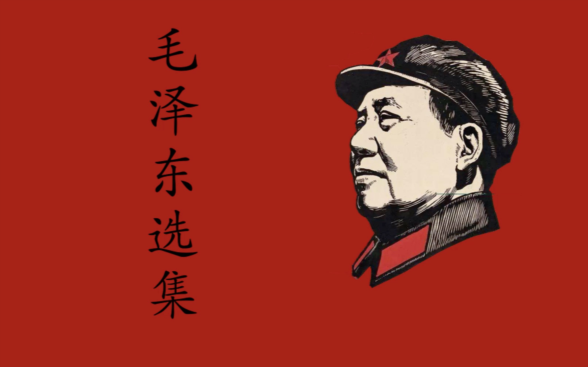

基于原文内容，使用有序/无序列表、引用等结构对文章进行自定义划分，以方便理解和阅读全文。
第一卷
第一次国内革命战争时期
《中国社会各阶级的分析》1
1925 年 12 月 1 日
谁是我们的敌人？谁是我们的朋友？这个问题是革命的首要问题。中国过去一切革命斗争成效甚少，其基本原因就是因为不能团结真正的朋友，以攻击真正的敌人。革命党是群众的向导，在革命中未有革命党领错了路而革命不失败的。我们的革命要有不领错路和一定成功的把握，不可不注意团结我们的真正的朋友，以攻击我们的真正的敌人。我们要分辨真正的敌友，不可不将中国社会各阶级的经济地位及其对于革命的态度，作一个大概的分析。
中国社会各阶级的情况是怎样的呢？
-
地主阶级和买办阶级
在经济落后的半殖民地的中国，地主阶级和买办阶级完全是国际资产阶级的附庸，其生存和发展，是附属于帝国主义的。这些阶级代表中国最落后的和最反动的生产关系，阻碍中国生产力的发展。他们和中国革命的目的完全不相容。特别是大地主阶级和大买办阶级，他们始终站在帝国主义一边，是极端的反革命派。
其政治代表是国家主义派2和国民党右派。
-
中产阶级
这个阶级代表中国城乡资本主义的生产关系。
中产阶级主要是指民族资产阶级，他们对于中国革命具有矛盾的态度：他们在受外资打击、军阀压迫感觉痛苦时，需要革命，赞成反帝国主义反军阀的革命运动；但是当着革命在国内有本国无产阶级的勇猛参加，在国外有国际无产阶级的积极援助，对于其欲达到大资产阶级地位的阶级的发展感觉到威胁时，他们又怀疑革命。其政治主张为实现民族资产阶级一阶级统治的国家。
有一个自称为戴季陶3“真实信徒”的，在北京《晨报》4上发表议论说：“举起你的左手打倒帝国主义，举起你的右手打倒共产党。”这两句话，画出了这个阶级的矛盾惶遽状态。他们反对以阶级斗争学说解释国民党的民生主义，他们反对国民党联俄和容纳共产党5及左派分子。但是这个阶级的企图——实现民族资产阶级统治的国家，是完全行不通的，因为现在世界上的局面，是革命和反革命两大势力作最后斗争的局面。这两大势力竖起了两面大旗：一面是红色的革命的大旗，第三国际6高举着，号召全世界一切被压迫阶级集合于其旗帜之下；一面是白色的反革命的大旗，国际联盟7高举着，号召全世界一切反革命分子集合于其旗帜之下。那些中间阶级，必定很快地分化，或者向左跑入革命派，或者向右跑入反革命派，没有他们“独立”的余地。所以，中国的中产阶级，以其本阶级为主体的“独立”革命思想，仅仅是一个幻想。
-
小资产阶级
如自耕农8，手工业主，小知识阶层——学生界、中小学教员、小员司、小事务员、小律师，小商人等都属于这一类。
这一个阶级，在人数上，在阶级性上，都值得大大注意。自耕农和手工业主所经营的，都是小生产的经济。这个小资产阶级内的各阶层虽然同处在小资产阶级经济地位，但有三个不同的部分。
- 第一部分是有余钱剩米的，即用其体力或脑力劳动所得，除自给外，每年有余剩。这种人发财观念极重，对赵公元帅9礼拜最勤，虽不妄想发大财，却总想爬上中产阶级地位。他们看见那些受人尊敬的小财东，往往垂着一尺长的涎水。这种人胆子小，他们怕官，也有点怕革命。因为他们的经济地位和中产阶级颇接近，故对于中产阶级的宣传颇相信，对于革命取怀疑的态度。这一部分人在小资产阶级中占少数，是小资产阶级的右翼。
- 第二部分是在经济上大体上可以自给的。这一部分人比较第一部分人大不相同，他们也想发财，但是赵公元帅总不让他们发财，而且因为近年以来帝国主义、军阀、封建地主、买办大资产阶级的压迫和剥削，他们感觉现在的世界已经不是从前的世界。他们觉得现在如果只使用和从前相等的劳动，就会不能维持生活。必须增加劳动时间，每天起早散晚，对于职业加倍注意，方能维持生活。他们有点骂人了，骂洋人叫“洋鬼子”，骂军阀叫“抢钱司令”，骂土豪劣绅叫“为富不仁”。对于反帝国主义反军阀的运动，仅怀疑其未必成功（理由是：洋人和军阀的来头那么大），不肯贸然参加，取了中立的态度，但是绝不反对革命。这一部分人数甚多，大概占小资产阶级的一半。
- 第三部分是生活下降的。这一部分人好些大概原先是所谓殷实人家，渐渐变得仅仅可以保住，渐渐变得生活下降了。他们每逢年终结账一次，就吃惊一次，说：“咳，又亏了！”这种人因为他们过去过着好日子，后来逐年下降，负债渐多，渐次过着凄凉的日子，“瞻念前途，不寒而栗”。这种人在精神上感觉的痛苦很大，因为他们有一个从前和现在相反的比较。这种人在革命运动中颇要紧，是一个数量不小的群众，是小资产阶级的左翼。
以上所说小资产阶级的三部分，对于革命的态度，在平时各不相同；但到战时，即到革命潮流高涨、可以看得见胜利的曙光时，不但小资产阶级的左派参加革命，中派亦可参加革命，即右派分子受了无产阶级和小资产阶级左派的革命大潮所裹挟，也只得附和着革命。我们从一九二五年的五卅运动10和各地农民运动的经验看来，这个断定是不错的。
-
半无产阶级
此处所谓半无产阶级，包含：
绝大部分半自耕农和贫农是农村中一个数量极大的群众。所谓农民问题，主要就是他们的问题。半自耕农、贫农和小手工业者所经营的，都是更细小的小生产的经济。绝大部分半自耕农和贫农虽同属半无产阶级，但其经济状况仍有上、中、下三个细别。半自耕农，其生活苦于自耕农，因其食粮每年大约有一半不够，须租别人田地，或者出卖一部分劳动力，或经营小商，以资弥补。春夏之间，青黄不接，高利向别人借债，重价向别人籴粮，较之自耕农的无求于人，自然景遇要苦，但是优于贫农。因为贫农无土地，每年耕种只得收获之一半或不足一半；半自耕农则租于别人的部分虽只收获一半或不足一半，然自有的部分却可全得。故半自耕农的革命性优于自耕农而不及贫农。
贫农是农村中的佃农，受地主的剥削。其经济地位又分两部分。
- 一部分贫农有比较充足的农具和相当数量的资金。此种农民，每年劳动结果，自己可得一半。不足部分，可以种杂粮、捞鱼虾、饲鸡豕，或出卖一部分劳动力，勉强维持生活，于艰难竭蹶之中，存聊以卒岁之想。故其生活苦于半自耕农，然较另一部分贫农为优。其革命性，则优于半自耕农而不及另一部分贫农。
- 所谓另一部分贫农，则既无充足的农具，又无资金，肥料不足，土地歉收，送租之外，所得无几，更需要出卖一部分劳动力。荒时暴月，向亲友乞哀告怜，借得几斗几升，敷衍三日五日，债务丛集，如牛负重。他们是农民中极艰苦者，极易接受革命的宣传。
小手工业者所以称为半无产阶级，是因为他们虽然自有简单的生产手段，且系一种自由职业，但他们也常常被迫出卖一部分劳动力，其经济地位略与农村中的贫农相当。因其家庭负担之重，工资和生活费用之不相称，时有贫困的压迫和失业的恐慌，和贫农亦大致相同。
店员是商店的雇员，以微薄的薪资，供家庭的费用，物价年年增长，薪给往往须数年一增，偶与此辈倾谈，便见叫苦不迭。其地位和贫农及小手工业者不相上下，对于革命宣传极易接受。小贩不论肩挑叫卖，或街畔摊售，总之本小利微，吃着不够。其地位和贫农不相上下，其需要一个变更现状的革命，也和贫农相同。
-
无产阶级
现代工业无产阶级约二百万人。中国因经济落后，故现代工业无产阶级人数不多。二百万左右的产业工人中，主要为铁路、矿山、海运、纺织、造船五种产业的工人，而其中很大一个数量是在外资产业的奴役下。
工业无产阶级人数虽不多，却是中国新的生产力的代表者，是近代中国最进步的阶级，做了革命运动的领导力量。我们看四年以来的罢工运动，如海员罢工13、铁路罢工14、开滦和焦作煤矿罢工15、沙面罢工16以及“五卅”后上海香港两处的大罢工17所表现的力量，就可知工业无产阶级在中国革命中所处地位的重要。他们所以能如此，第一个原因是集中。无论哪种人都不如他们的集中。第二个原因是经济地位低下。他们失了生产手段，剩下两手，绝了发财的望，又受着帝国主义、军阀、资产阶级的极残酷的待遇，所以他们特别能战斗。
都市苦力工人的力量也很可注意。以码头搬运夫和人力车夫占多数，粪夫清道夫等亦属于这一类。他们除双手外，别无长物，其经济地位和产业工人相似，惟不及产业工人的集中和在生产上的重要。
中国尚少新式的资本主义的农业。所谓农村无产阶级，是指长工、月工、零工等雇农而言。此等雇农不仅无土地，无农具，又无丝毫资金，只得营工度日。其劳动时间之长，工资之少，待遇之薄，职业之不安定，超过其他工人。此种人在乡村中是最感困难者，在农民运动中和贫农处于同一紧要的地位。
此外，还有数量不小的游民无产者，为失了土地的农民和失了工作机会的手工业工人。他们是人类生活中最不安定者。他们在各地都有秘密组织，如闽粤的“三合会”，湘鄂黔蜀的“哥老会”，皖豫鲁等省的“大刀会”，直隶及东三省的“在理会”，上海等处的“青帮”18，都曾经是他们的政治和经济斗争的互助团体。处置这一批人，是中国的困难的问题之一。这一批人很能勇敢奋斗，但有破坏性，如引导得法，可以变成一种革命力量。
综上所述，可知一切勾结帝国主义的军阀、官僚、买办阶级、大地主阶级以及附属于他们的一部分反动知识界，是我们的敌人。工业无产阶级是我们革命的领导力量。一切半无产阶级、小资产阶级，是我们最接近的朋友。那动摇不定的中产阶级，其右翼可能是我们的敌人，其左翼可能是我们的朋友——但我们要时常提防他们，不要让他们扰乱了我们的阵线。
《湖南农民运动考察报告》19
1927 年 3 月
农民问题的严重性
我这回到湖南20，实地考察了湘潭、湘乡、衡山、醴陵、长沙五县的情况。从一月四日起至二月五日止，共三十二天，在乡下，在县城，召集有经验的农民和农运工作同志开调查会，仔细听他们的报告，所得材料不少。许多农民运动的道理，和在汉口、长沙从绅士阶级那里听得的道理，完全相反。许多奇事，则见所未见，闻所未闻。我想这些情形，很多地方都有。
所有各种反对农民运动的议论，都必须迅速矫正。革命当局对农民运动的各种错误处置，必须迅速变更。这样，才于革命前途有所补益。因为目前农民运动的兴起是一个极大的问题。很短的时间内，将有几万万农民从中国中部、南部和北部各省起来，其势如暴风骤雨，迅猛异常，无论什么大的力量都将压抑不住。他们将冲决一切束缚他们的罗网，朝着解放的路上迅跑。一切帝国主义、军阀、贪官污吏、土豪劣绅，都将被他们葬入坟墓。一切革命的党派、革命的同志，都将在他们面前受他们的检验而决定弃取。站在他们的前头领导他们呢？还是站在他们的后头指手画脚地批评他们呢？还是站在他们的对面反对他们呢？每个中国人对于这三项都有选择的自由，不过时局将强迫你迅速地选择罢了。
组织起来
湖南的农民运动，就湘中、湘南已发达的各县来说，大约分为两个时期。
-
去年一月至九月为第一时期，即组织时期。
此时期内，一月至六月为秘密活动时期，七月至九月革命军驱逐赵恒惕21，为公开活动时期。
此时期内，农会会员的人数总计不过三四十万，能直接领导的群众也不过百余万，在农村中还没有什么斗争，因此各界对它也没有什么批评。因为农会会员能作向导，作侦探，作挑夫，北伐军的军官们还有说几句好话的。
-
十月至今年一月为第二时期，即革命时期。
农会会员激增到二百万，能直接领导的群众增加到一千万。因为农民入农会大多数每家只写一个人的名字，故会员二百万，群众便有约一千万。在湖南农民全数中，差不多组织了一半。如湘潭、湘乡、浏阳、长沙、醴陵、宁乡、平江、湘阴、衡山、衡阳、耒阳、郴县、安化等县，差不多全体农民都集合在农会的组织中，都立在农会领导之下。农民既已有了广大的组织，便开始行动起来，于是在四个月中造成一个空前的农村大革命。
打倒土豪劣绅，一切权力归农会
农民的主要攻击目标是土豪劣绅，不法地主，旁及各种宗法的思想和制度，城里的贪官污吏，乡村的恶劣习惯。
这个攻击的形势，简直是急风暴雨，顺之者存，违之者灭。其结果，把几千年封建地主的特权，打得个落花流水。地主的体面威风，扫地以尽。地主权力既倒，农会便成了唯一的权力机关，真正办到了人们所谓“一切权力归农会”。连两公婆吵架的小事，也要到农民协会去解决。一切事情，农会的人不到场，便不能解决。农会在乡村简直独裁一切，真是“说得出，做得到”。外界的人只能说农会好，不能说农会坏。土豪劣绅，不法地主，则完全被剥夺了发言权，没有人敢说半个不字。
在农会威力之下，土豪劣绅们头等的跑到上海，二等的跑到汉口，三等的跑到长沙，四等的跑到县城，五等以下土豪劣绅崽子则在乡里向农会投降。
“我出十块钱，请你们准我进农民协会。”小劣绅说。
“嘻！谁要你的臭钱！”农民这样回答。
好些中小地主、富农乃至中农，从前反对农会的，此刻求入农会不可得。我到各处，常常遇到这种人，这样向我求情：“请省里来的委员作保！”
前清地方造丁口册，有正册、另册二种，好人入正册，匪盗等坏人入另册。现在有些地方的农民便拿了这事吓那些从前反对农会的人：“把他们入另册！”
那些人怕入另册，便多方设法求入农会，一心要想把他们的名字写上那农会的册子才放心。但他们往往遭农会严厉拒绝，所以他们总是悬心吊胆地过日子；摈在农会的门外，好像无家可归的样子，乡里话叫做“打零”。总之，四个月前被一般人看不起的所谓“农民会”，现在却变成顶荣耀的东西。从前拜倒在绅士权力下面的人，现在却拜倒在农民权力之下。无论什么人，都承认去年十月以前和十月以后是两个世界。
“糟得很”和“好得很”
农民在乡里造反，搅动了绅士们的酣梦。乡里消息传到城里来，城里的绅士立刻大哗。我初到长沙时，会到各方面的人，听到许多的街谈巷议。从中层以上社会至国民党右派，无不一言以蔽之曰：“糟得很。”即使是很革命的人吧，受了那班“糟得很”派的满城风雨的议论的压迫，他闭眼一想乡村的情况，也就气馁起来，没有法子否认这“糟”字。很进步的人也只是说：“这是革命过程中应有的事，虽则是糟。”总而言之，无论什么人都无法完全否认这“糟”字。实在呢，如前所说，乃是广大的农民群众起来完成他们的历史使命，乃是乡村的民主势力起来打翻乡村的封建势力。宗法封建性的土豪劣绅，不法地主阶级，是几千年专制政治的基础，帝国主义、军阀、贪官污吏的墙脚。打翻这个封建势力，乃是国民革命的真正目标。孙中山先生致力国民革命凡四十年，所要做而没有做到的事，农民在几个月内做到了。这是四十年乃至几千年未曾成就过的奇勋。这是好得很。完全没有什么“糟”，完全不是什么“糟得很”。“糟得很”，明明是站在地主利益方面打击农民起来的理论，明明是地主阶级企图保存封建旧秩序，阻碍建设民主新秩序的理论，明明是反革命的理论。每个革命的同志，都不应该跟着瞎说。你若是一个确定了革命观点的人，而且是跑到乡村里去看过一遍的，你必定觉到一种从来未有的痛快。无数万成群的奴隶——农民，在那里打翻他们的吃人的仇敌。农民的举动，完全是对的，他们的举动好得很！“好得很”是农民及其他革命派的理论。
一切革命同志须知：国民革命需要一个大的农村变动。辛亥革命22没有这个变动，所以失败了。现在有了这个变动，乃是革命完成的重要因素。一切革命同志都要拥护这个变动，否则他就站到反革命立场上去了。
所谓“过分”的问题
又有一般人说：“农会虽要办，但是现在农会的举动未免太过分了。”这是中派的议论。
实际怎样呢？的确的，农民在乡里颇有一点子“乱来”。农会权力无上，不许地主说话，把地主的威风扫光。这等于将地主打翻在地，再踏上一只脚。“把你入另册！”向土豪劣绅罚款捐款，打轿子。反对农会的土豪劣绅的家里，一群人涌进去，杀猪出谷。土豪劣绅的小姐少奶奶的牙床上，也可以踏上去滚一滚。动不动捉人戴高帽子游乡，“劣绅！今天认得我们！”为所欲为，一切反常，竟在乡村造成一种恐怖现象。这就是一些人的所谓“过分”，所谓“矫枉过正”，所谓“未免太不成话”。
这派议论貌似有理，其实也是错的。
-
第一，上述那些事，都是土豪劣绅、不法地主自己逼出来的。
土豪劣绅、不法地主，历来凭借势力称霸，践踏农民，农民才有这种很大的反抗。凡是反抗最力、乱子闹得最大的地方，都是土豪劣绅、不法地主为恶最甚的地方。农民的眼睛，全然没有错的。谁个劣，谁个不劣，谁个最甚，谁个稍次，谁个惩办要严，谁个处罚从轻，农民都有极明白的计算，罚不当罪的极少。
-
第二，革命不是请客吃饭，不是做文章，不是绘画绣花，不能那样雅致，那样从容不迫，文质彬彬，那样温良恭俭让。革命是暴动，是一个阶级推翻一个阶级的暴烈的行动。
农村革命是农民阶级推翻封建地主阶级的权力的革命。农民若不用极大的力量，决不能推翻几千年根深蒂固的地主权力。农村中须有一个大的革命热潮，才能鼓动成千成万的群众，形成一个大的力量。上面所述那些所谓“过分”的举动，都是农民在乡村中由大的革命热潮鼓动出来的力量所造成的。
这些举动，在农民运动第二时期（革命时期）是非常之需要的。在第二时期内，必须建立农民的绝对权力。必须不准人恶意地批评农会。必须把一切绅权都打倒，把绅士打在地下，甚至用脚踏上。所有一切所谓“过分”的举动，在第二时期都有革命的意义。
质言之，每个农村都必须造成一个短时期的恐怖现象，非如此决不能镇压农村反革命派的活动，决不能打倒绅权。矫枉必须过正，不过正不能矫枉23。
这一派的议论，表面上和前一派不同，但其实质则和前一派同站在一个观点上，依然是拥护特权阶级利益的地主理论。这种理论，阻碍农民运动的兴起，其结果破坏了革命，我们不能不坚决地反对。
所谓“痞子运动”
国民党右派说：“农民运动是痞子运动，是惰农运动。”这种议论，在长沙颇盛行。我跑到乡下，听见绅士们说：“农民协会可以办，但是现在办事人不行，要换人啦！”这种议论，和右派的话是一个意思，都是说农运可做（因农民运动已起来，无人敢说不可做），但是现在做农运的人不行，尤其痛恨下级农民协会办事人，说他们都是些“痞子”。
总而言之，一切从前为绅士们看不起的人，一切被绅士们打在泥沟里，在社会上没有了立足地位，没有了发言权的人，现在居然伸起头来了。不但伸起头，而且掌权了。他们在乡农民协会（农民协会的最下级）称王，乡农民协会在他们手里弄成很凶的东西了。他们举起他们那粗黑的手，加在绅士们头上了。他们用绳子捆绑了劣绅，给他戴上高帽子，牵着游乡（湘潭、湘乡叫游团，醴陵叫游垅）。他们那粗重无情的斥责声，每天都有些送进绅士们的耳朵里去。他们发号施令，指挥一切。他们站在一切人之上——从前站在一切人之下，所以叫做反常。
革命先锋
对于一件事或一种人，有相反的两种看法，便出来相反的两种议论。“糟得很”和“好得很”，“痞子”和“革命先锋”，都是适例。
前面说了农民成就了多年未曾成就的革命事业，农民做了国民革命的重要工作。但是这种革命大业，革命重要工作，是不是农民全体做的呢？不是的。农民中有富农、中农、贫农三种。三种状况不同，对于革命的观感也各别。
当第一时期，富农耳里听得的是所谓江西一败如水，蒋介石打伤了脚24，坐飞机回广东25了。吴佩孚26重新占了岳州。农民协会必定立不久，三民主义27也兴不起，因为这是所谓从来没有的东西。乡农民协会的办事人（多属所谓“痞子”之类），拿了农会的册子，跨进富农的大门，对富农说：“请你进农民协会。”富农怎样回答呢？“农民协会吗？我在这里住了几十年，种了几十年田，没有见过什么农民协会，也吃饭。我劝你们不办的好！”富农中态度好点的这样说。“什么农民协会，砍脑壳会，莫害人！”富农中态度恶劣的这样说。新奇得很，农民协会居然成立了好几个月，而且敢于反对绅士。邻近的绅士因为不肯缴鸦片枪，被农民协会捉了去游乡。县城里并且杀了大绅士，例如湘潭的晏容秋，宁乡的杨致泽。
十月革命纪念大会，反英大会，北伐胜利总庆祝，每乡都有上万的农民举起大小旗帜，杂以扁担锄头，浩浩荡荡，出队示威。这时，富农才开始惶惑起来。在北伐胜利总庆祝中，他们听见说，九江也打开了，蒋介石没有伤脚，吴佩孚究竟打败了。而且“三民主义万岁”，“农民协会万岁”，“农民万岁”等等，明明都写在“红绿告示”（标语）上面。“农民万岁，这些人也算作万岁吗？”富农表示很大的惶惑。农会于是神气十足了。农会的人对富农说：“把你们入另册！”或者说：“再过一个月，入会的每人会费十块钱！”在这样的形势之下，富农才慢慢地进了农会28，有些是缴过五角钱或一块钱（本来只要一百钱）入会费的，有些是托人说情才邀了农会允许的。亦有好些顽固党，至今还没有入农会。富农入会，多把他那家里一个六七十岁的老头子到农会去上一个名字，因为他们始终怕“抽丁”。入会后，也并不热心替农会做事。他们的态度始终是消极的。
中农呢？他们的态度是游移的。他们想到革命对他们没有什么大的好处。他们锅里有米煮，没有人半夜里敲门来讨账。他们也根据从来有没有的道理，独自皱着眉头在那里想：“农民协会果然立得起来吗？”“三民主义果然兴得起来吗？”他们的结论是：“怕未必！”他们以为这全决于天意：“办农民会，晓得天意顺不顺咧？”在第一时期内，农会的人拿了册子，进了中农的门，对着中农说道：“请你加入农民协会！”中农回答道：“莫性急啦！”一直到第二时期，农会势力大盛，中农方加入农会。他们在农会的表现比富农好，但暂时还不甚积极，他们还要看一看。农会争取中农入会，向他们多作解释工作，是完全必要的。
乡村中一向苦战奋斗的主要力量是贫农。从秘密时期到公开时期，贫农都在那里积极奋斗。他们最听共产党的领导。他们和土豪劣绅是死对头，他们毫不迟疑地向土豪劣绅营垒进攻。他们对着富农说：“我们早进了农会，你们为什么还迟疑？”富农带着讥笑的声调说道：“你们上无片瓦，下无插针之地，有什么不进农会！”的确，贫农们不怕失掉什么。他们中间有很多人，确实是“上无片瓦，下无插针之地”，他们有什么不进农会？
据长沙的调查：乡村人口中，贫农占百分之七十，中农占百分之二十，地主和富农占百分之十。百分之七十的贫农中，又分赤贫、次贫二类。全然无业，即既无土地，又无资金，完全失去生活依据，不得不出外当兵，或出去做工，或打流当乞丐的，都是“赤贫”，占百分之二十。半无业，即略有土地，或略有资金，但吃的多，收的少，终年在劳碌愁苦中过生活的，如手工工人、佃农（富佃除外）、半自耕农29等，都是“次贫”，占百分之五十。
这个贫农大群众，合共占乡村人口百分之七十，乃是农民协会的中坚，打倒封建势力的先锋，成就那多年未曾成就的革命大业的元勋。没有贫农阶级（照绅士的话说，没有“痞子”），决不能造成现时乡村的革命状态，决不能打倒土豪劣绅，完成民主革命。贫农，因为最革命，所以他们取得了农会的领导权。所有最下一级农民协会的委员长、委员，在第一第二两个时期中，几乎全数是他们（衡山县乡农民协会职员，赤贫阶层占百分之五十，次贫阶层占百分之四十，穷苦知识分子占百分之十）。
这个贫农领导，是非常之需要的。没有贫农，便没有革命。若否认他们，便是否认革命。若打击他们，便是打击革命。他们的革命大方向始终没有错。他们损伤了土豪劣绅的体面。他们打翻了大小土豪劣绅在地上，并且踏上一只脚。他们在革命期内的许多所谓“过分”举动，实在正是革命的需要。湖南有些县的县政府、县党部30和县农会，已经做了若干错处，竟有循地主之请，派兵拘捕下级农会职员的。衡山、湘乡二县的监狱里，关了好多个乡农民协会委员长、委员。这个错误非常之大，助长了反动派的气焰。只要看拘捕了农民协会委员长、委员，当地的不法地主们便大高兴，反动空气便大增高，就知道这事是否错误。
我们要反对那些所谓“痞子运动”、“惰农运动”的反革命议论，尤其要注意不可做出帮助土豪劣绅打击贫农阶级的错误行动。事实上，贫农领袖中，从前虽有些确是有缺点的，但是现在多数都变好了。他们自己在那里努力禁牌赌，清盗匪。农会势盛地方，牌赌禁绝，盗匪潜踪。有些地方真个道不拾遗，夜不闭户。据衡山的调查，贫农领袖百人中八十五人都变得很好，很能干，很努力。只有百分之十五，尚有些不良习惯。这只能叫做“少数不良分子”，决不能跟着土豪劣绅的口白，笼统地骂“痞子”。要解决这“少数不良分子”的问题，也只能在农会整顿纪律的口号之下，对群众做宣传，对他们本人进行训练，把农会的纪律整好，决不能随便派兵捉人，损害贫农阶级的威信，助长土豪劣绅的气势。这一点是非常要注意的。
十四件大事
一般指摘农会的人说农会做了许多坏事。我在前面已经指出，农民打土豪劣绅这件事完全是革命行为，并没有什么可指摘。但是农民所做的事很多，为了答复人们的指摘，我们须得把农民所有的行动过细检查一遍，逐一来看他们的所作所为究竟是怎么样。我把几个月来农民的行动分类总计起来，农民在农民协会领导之下总共作了十四件大事，如下所记。
-
第一件将农民组织在农会里
这是农民所做的第一件大事。像湘潭、湘乡、衡山这样的县，差不多所有的农民都组织起来了，几乎没有哪一只“角暗里”的农民没有起来，这是第一等。有些县，农民组织起来了一大部分，尚有一小部分没有组织，如益阳、华容等县，这是第二等。有些县，农民组织起来了一小部分，大部分尚未组织起来，如城步、零陵等县，这是第三等。湘西一带，在袁祖铭31势力之下，农会宣传未到，许多县的农民还全未组织起来，这是第四等。
大概以长沙为中心的湘中各县最发展，湘南各县次之，湘西还在开始组织中。据去年十一月省农民协会统计，全省七十五县中，三十七县有了组织，会员人数一百三十六万七千七百二十七人。此数中，约有一百万是去年十月、十一月两个月内农会势力大盛时期组织的，九月以前还不过三四十万人。现又经过十二月、一月两个月，农民运动正大发展。截至一月底止，会员人数至少满了二百万。因入会一家多只登记一人，平均每家以五口计，群众便约有一千万。
这种惊人的加速度的发展，是所以使一切土豪劣绅贪官污吏孤立，使社会惊为前后两个世界，使农村造成大革命的原因。这是农民在农民协会领导之下所做的第一件大事。
-
第二件政治上打击地主
农民有了组织之后，第一个行动，便是从政治上把地主阶级特别是土豪劣绅的威风打下去，即是从农村的社会地位上把地主权力打下去，把农民权力长上来。这是一个极严重极紧要的斗争。这个斗争是第二时期即革命时期的中心斗争。这个斗争不胜利，一切减租减息，要求土地及其他生产手段等等的经济斗争，决无胜利之可能。
湖南许多地方，像湘乡、衡山、湘潭等县，地主权力完全推翻，形成了农民的独一权力，自无问题。但是醴陵等县，尚有一部分地方（如醴陵之西南两区），表面上地主权力低于农民权力，实际上因为政治斗争不激烈，地主权力还隐隐和农民权力对抗。这些地方，还不能说农民已得了政治的胜利，还须加劲作政治斗争，至地主权力被农民完全打下去为止。
综计农民从政治上打击地主的方法有如下各项：
-
清算
土豪劣绅经手地方公款，多半从中侵蚀，账目不清。这回农民拿了清算的题目，打翻了很多的土豪劣绅。好多地方组织了清算委员会，专门向土豪劣绅算账，土豪劣绅看了这样的机关就打颤。这样的清算运动，在农民运动起来的各县做得很普遍，意义不重在追回款子，重在宣布土豪劣绅的罪状，把土豪劣绅的政治地位和社会地位打下去。
-
罚款
清算结果，发现舞弊，或从前有鱼肉农民的劣迹，或现在有破坏农会的行为，或违禁牌赌，或不缴烟枪。在这些罪名之下，农民议决，某土豪罚款若干，某劣绅罚款若干，自数十元至数千元不等。被农民罚过的人，自然体面扫地。
-
捐款
向为富不仁的地主捐款救济贫民，办合作社，办农民贷款所，或作他用。捐款也是一种惩罚，不过较罚款为轻。地主为免祸计，自动地捐款给农会的，亦颇不少。
-
小质问
遇有破坏农会的言论行动而罪状较轻的，则邀集多人涌入其家，提出比较不甚严重的质问。结果，多要写个“休息字”，写明从此终止破坏农会名誉的言论行动了事。
-
大示威
统率大众，向着和农会结仇的土豪劣绅示威，在他家里吃饭，少不得要杀猪出谷，此类事颇不少。
最近湘潭马家河，有率领一万五千群众向六个劣绅问罪，延时四日，杀猪百三十余个的事。示威的结果，多半要罚款。戴高帽子游乡。这种事各地做得很多。把土豪劣绅戴上一顶纸扎的高帽子，在那帽子上面写上土豪某某或劣绅某某字样。用绳子牵着，前后簇拥着一大群人。也有敲打铜锣，高举旗帜，引人注目的。这种处罚，最使土豪劣绅颤栗。戴过一次高帽子的，从此颜面扫地，做不起人。故有钱的多愿罚款，不愿戴高帽子。但农民不依时，还是要戴。
有一个乡农会很巧妙，捉了一个劣绅来，声言今天要给他戴高帽子。劣绅于是吓黑了脸。但是，农会议决，今天不给他戴高帽子。因为今天给他戴过了，这劣绅横了心，不畏罪了，不如放他回去，等日再戴。那劣绅不知何日要戴高帽子，每日在家放心不下，坐卧不宁。关进县监狱。这是比戴高帽子更重的罪。把土豪劣绅捉了，送进知事公署的监狱，关起来，要知事办他的罪。现在监狱里关人和从前两样，从前是绅士送农民来关，现在是农民送绅士来关。
-
驱逐
土豪劣绅中罪恶昭著的，农民不是要驱逐，而是要捉他们，或杀他们。他们怕捉怕杀，逃跑出外。重要的土豪劣绅，在农民运动发达县份，几乎都跑光了，结果等于被驱逐。
他们中间，头等的跑到上海，次等的跑到汉口，三等的跑到长沙，四等的跑到县城。这些逃跑的土豪劣绅，以逃到上海的为最安全。逃到汉口的，如华容的三个劣绅，终被捉回。逃到长沙的，更随时有被各县旅省学生捕获之虞，我在长沙就亲眼看见捕获两个。逃到县城的，资格已是第四等了，农民耳目甚多，发觉甚易。湖南政府财政困难，财政当局曾归咎于农民驱逐阔人，以致筹款不易，亦可见土豪劣绅不容于乡里之一斑。
-
枪毙
这必是很大的土豪劣绅，农民和各界民众共同做的。
例如宁乡的杨致泽，岳阳的周嘉淦，华容的傅道南、孙伯助，是农民和各界人民督促政府枪毙的。湘潭的晏容秋，则是农民和各界人民强迫县长同意从监狱取出，由农民自己动手枪毙的。宁乡的刘昭，是农民直接打死的。醴陵的彭志蕃，益阳的周天爵、曹云，则正待“审判土豪劣绅特别法庭”判罪处决。
这样的大劣绅、大土豪，枪毙一个，全县震动，于肃清封建余孽，极有效力。这样的大土豪劣绅，各县多的有几十个，少的也有几个，每县至少要把几个罪大恶极的处决了，才是镇压反动派的有效方法。
土豪劣绅势盛时，杀农民真是杀人不眨眼。长沙新康镇团防局长何迈泉，办团十年，在他手里杀死的贫苦农民将近一千人，美其名曰“杀匪”。我的家乡湘潭县银田镇团防局长汤峻岩、罗叔林二人，民国二年以来十四年间，杀人五十多，活埋四人。被杀的五十多人中，最先被杀的两人是完全无罪的乞丐。汤峻岩说：“杀两个叫化子开张！”这两个叫化子就是这样一命呜呼了。以前土豪劣绅的残忍，土豪劣绅造成的农村白色恐怖是这样，现在农民起来枪毙几个土豪劣绅，造成一点小小的镇压反革命派的恐怖现象，有什么理由说不应该？
-
-
第三件经济上打击地主
-
不准谷米出境，不准高抬谷价，不准囤积居奇
这是近月湖南农民经济斗争上一件大事。从去年十月至现在，贫农把地主富农的谷米阻止出境，并禁止高抬谷价和囤积居奇。结果，贫农的目的完全达到，谷米阻得水泄不通，谷价大减，囤积居奇的绝迹。
-
不准加租加押，宣传减租减押
去年七八月间，农会还在势力弱小时期，地主依然按照剥削从重老例，纷纷通知佃农定要加租加押。但是到了十月，农会势力大增，一致反对加租加押，地主便不敢再提加租加押四字。及至十一月后，农民势力压倒地主势力，农民乃进一步宣传减租减押。
农民说：可惜去秋交租时农会尚无力量，不然去秋就减了租了。对于今秋减租，农民正大做宣传，地主们亦在问减租办法。至于减押，衡山等县目下已在进行。
-
不准退佃
去年七八月间，地主还有好多退佃另佃的事。十月以后，无人敢退佃了。现在退佃另佃已完全不消说起，只有退佃自耕略有点问题。有些地方，地主退佃自耕，农民也不准。有些地方，地主如自耕，可以允许退佃，但同时发生了佃农失业问题。此问题尚无一致的解决办法。
-
减息
安化已普遍地减了息，他县亦有减息的事。惟农会势盛地方，地主惧怕“共产”，完全“卡借”，农村几无放债的事。此时所谓减息，限于旧债。旧债不仅减息，连老本也不许债主有逼取之事。贫农说：“怪不得，年岁大了，明年再还吧！”
-
-
第四件推翻土豪劣绅的封建统治——打倒都团
旧式的都团（即区乡）政权机关，尤其是都之一级，即接近县之一级，几乎完全是土豪劣绅占领。“都”管辖的人口有一万至五六万之多，有独立的武装如团防局，有独立的财政征收权如亩捐32等，有独立的司法权如随意对农民施行逮捕、监禁、审问、处罚。这样的机关里的劣绅，简直是乡里王。农民对政府如总统、督军33、县长等还比较不留心，这班乡里王才真正是他们的“长上”，他们鼻子里哼一声，农民晓得这是要十分注意的。这回农村造反的结果，地主阶级的威风普遍地打下来，土豪劣绅把持的乡政机关，自然跟了倒塌。都总团总34躲起不敢出面，一切地方上的事都推到农民协会去办。
他们应付的话是：“不探（管）闲事！”
农民们相与议论，谈到都团总，则愤然说：“那班东西么，不作用了！”
“不作用”三个字，的确描画了经过革命风潮地方的旧式乡政机关。
-
第五件推翻地主武装，建立农民武装
湖南地主阶级的武装，中路较少，西南两路较多。平均每县以六百枝步枪计，七十五县共有步枪四万五千枝，事实上或者还要多。
农民运动发展区域之中南两路，因农民起来形势甚猛，地主阶级招架不住，其武装势力大部分投降农会，站在农民利益这边，例如宁乡、平江、浏阳、长沙、醴陵、湘潭、湘乡、安化、衡山、衡阳等县。小部分站在中立地位，但倾向于投降，例如宝庆等县。再一小部分则站在和农会敌对地位，例如宜章、临武、嘉禾等县，但现时农民正在加以打击，可能于不久时间消灭其势力。这样由反动的地主手里拿过来的武装，将一律改为“挨户团常备队”35，放在新的乡村自治机关——农民政权的乡村自治机关管理之下。
这种旧武装拿过来，是建设农民武装的一方面。
建设农民武装另有一个新的方面，即农会的梭镖队。梭镖——一种接以长柄的单尖两刃刀，单湘乡一县有十万枝。其他各县，如湘潭、衡山、醴陵、长沙等，七八万枝、五六万枝、三四万枝不等。凡有农民运动各县，梭镖队便迅速地发展。这种有梭镖的农民，将成为“挨户团非常备队”。这个广大的梭镖势力，大于前述旧武装势力，是使一切土豪劣绅看了打颤的一种新起的武装力量。湖南的革命当局，应使这种武装力量确实普及于七十五县二千余万农民之中，应使每个青年壮年农民都有一柄梭镖，而不应限制它，以为这是可以使人害怕的东西。若被这种梭镖队吓翻了，那真是胆小鬼！只有土豪劣绅看了害怕，革命党决不应该看了害怕。
-
第六件推翻县官老爷衙门差役的政权
县政治必须农民起来才能澄清，广东的海丰已经有了证明。这回在湖南，尤其得到了充分的证明。在土豪劣绅霸占权力的县，无论什么人去做知事，几乎都是贪官污吏。在农民已经起来的县，无论什么人去，都是廉洁政府。
我走过的几县，知事遇事要先问农民协会。在农民势力极盛的县，农民协会说话是“飞灵的”。农民协会要早晨捉土豪劣绅，知事不敢挨到中午，要中午捉，不敢挨到下午。农民的权力在乡间初涨起来的时候，县知事和土豪劣绅是勾结一起共同对付农民的。在农民的权力涨至和地主权力平行的时候，县知事取了向地主农民两边敷衍的态度，农民协会的话，有一些被他接受，有一些被他拒绝。上头所说农会说话飞灵，是在地主权力被农民权力完全打下去了的时候。现在像湘乡、湘潭、醴陵、衡山等县的县政治状况是：
-
（一）凡事取决于县长和革命民众团体的联合会议。
这种会议，由县长召集，在县署开。有些县名之曰“公法团联席会议”，有些县名之曰“县务会议”。出席的人，县长以外，为县农民协会、县总工会、县商民协会、县女界联合会、县教职员联合会、县学生联合会以及国民党县党部36的代表们。
在这样的会议里，各民众团体的意见影响县长，县长总是唯命是听。所以，在湖南采用民主的委员制县政治组织，应当是没有问题的了。现在的县政府，形式和实质，都已经是颇民主的了。达到这种形势，是最近两三个月的事，即农民从四乡起来打倒了土豪劣绅权力以后的事。知事看见旧靠山已倒，要做官除非另找靠山，这才开始巴结民众团体，变成了上述的局面。
-
（二）承审员没有案子。
湖南的司法制度，还是知事兼理司法，承审员助知事审案。知事及其僚佐要发财，全靠经手钱粮捐派，办兵差和在民刑诉讼上颠倒敲诈这几件事，尤以后一件为经常可靠的财源。几个月来，土豪劣绅倒了，没有了讼棍。农民的大小事，又一概在各级农会里处理。所以，县公署的承审员，简直没有事做。
湘乡的承审员告诉我：“没有农民协会以前，县公署平均每日可收六十件民刑诉讼禀帖；有农会后，平均每日只有四五件了。”于是知事及其僚佐们的荷包，只好空着。
-
（三）警备队、警察、差役，一概敛迹，不敢下乡敲诈。
从前乡里人怕城里人，现在城里人怕乡里人。尤其是县政府豢养的警察、警备队、差役这班恶狗，他们怕下乡，下乡也不敢再敲诈。他们看见农民的梭镖就发抖。
-
-
第七件推翻祠堂族长的族权和城隍土地菩萨的神权以至丈夫的男权
中国的男子，普通要受三种有系统的权力的支配，即：
- （一）由一国、一省、一县以至一乡的国家系统（政权）；
- （二）由宗祠、支祠以至家长的家族系统（族权）；
- （三）由阎罗天子、城隍庙王以至土地菩萨的阴间系统以及由玉皇上帝以至各种神怪的神仙系统——总称之为鬼神系统（神权）。
至于女子，除受上述三种权力的支配以外，还受男子的支配（夫权）。
这四种权力——政权、族权、神权、夫权，代表了全部封建宗法的思想和制度，是束缚中国人民特别是农民的四条极大的绳索。
农民在乡下怎样推翻地主的政权，已如前头所述。地主政权，是一切权力的基干。地主政权既被打翻，族权、神权、夫权便一概跟着动摇起来。农会势盛地方，族长及祠款经管人不敢再压迫族下子孙，不敢再侵蚀祠款。坏的族长、经管，已被当作土豪劣绅打掉了。从前祠堂里“打屁股”、“沉潭”、“活埋”等残酷的肉刑和死刑，再也不敢拿出来了。女子和穷人不能进祠堂吃酒的老例，也被打破。衡山白果地方的女子们，结队拥入祠堂，一屁股坐下便吃酒，族尊老爷们只好听她们的便。又有一处地方，因禁止贫农进祠堂吃酒，一批贫农拥进去，大喝大嚼，土豪劣绅长褂先生吓得都跑了。
神权的动摇，也是跟着农民运动的发展而普遍。许多地方，农民协会占了神的庙宇做会所。一切地方的农民协会，都主张提取庙产办农民学校，做农会经费，名之曰“迷信公款”。醴陵禁迷信、打菩萨之风颇盛行。北乡各区农民禁止家神老爷（傩神）游香。渌口伏波岭庙内有许多菩萨，因为办国民党区党部房屋不够，把大小菩萨堆于一角，农民无异言。自此以后，人家死了人，敬神、做道场、送大王灯的，就很少了。这事，因为是农会委员长孙小山倡首，当地的道士们颇恨孙小山。北三区龙凤庵农民和小学教员，砍了木菩萨煮肉吃。南区东富寺三十几个菩萨都给学生和农民共同烧掉了，只有两个小菩萨名“包公老爷”者，被一个老年农民抢去了，他说：“莫造孽！”在农民势力占了统治地位的地方，信神的只有老年农民和妇女，青年和壮年农民都不信了。农民协会是青年和壮年农民当权，所以对于推翻神权，破除迷信，是各处都在进行中的。
夫权这种东西，自来在贫农中就比较地弱一点，因为经济上贫农妇女不能不较富有阶级的女子多参加劳动，所以她们取得对于家事的发言权以至决定权的是比较多些。至近年，农村经济益发破产，男子控制女子的基本条件，业已破坏了。最近农民运动一起，许多地方，妇女跟着组织了乡村女界联合会，妇女抬头的机会已到，夫权便一天一天地动摇起来。
总而言之，所有一切封建的宗法的思想和制度，都随着农民权力的升涨而动摇。但是现在时期，农民的精力集中于破坏地主的政治权力这一点。要是地主的政治权力破坏完了的地方，农民对家族神道男女关系这三点便开始进攻了。但是这种进攻，现在到底还在“开始”，要完全推翻这三项，还要待农民的经济斗争全部胜利之后。因此，目前我们对农民应该领导他们极力做政治斗争，期于彻底推翻地主权力。并随即开始经济斗争，期于根本解决贫农的土地及其他经济问题。至于家族主义、迷信观念和不正确的男女关系之破坏，乃是政治斗争和经济斗争胜利以后自然而然的结果。若用过大的力量生硬地勉强地从事这些东西的破坏，那就必被土豪劣绅借为口实，提出“农民协会不孝祖宗”、“农民协会欺神灭道”、“农民协会主张共妻”等反革命宣传口号，来破坏农民运动。
湖南的湘乡、湖北的阳新，最近都发生地主利用了农民反对打菩萨的事，就是明证。菩萨是农民立起来的，到了一定时期农民会用他们自己的双手丢开这些菩萨，无须旁人过早地代庖丢菩萨。共产党对于这些东西的宣传政策应当是：“引而不发，跃如也。”37菩萨要农民自己去丢，烈女祠、节孝坊要农民自己去摧毁，别人代庖是不对的。
我在乡里也曾向农民宣传破除迷信。我的话是：
“信八字望走好运，信风水望坟山贯气。今年几个月光景，土豪劣绅贪官污吏一齐倒台了。难道这几个月以前土豪劣绅贪官污吏还大家走好运，大家坟山都贯气，这几个月忽然大家走坏运，坟山也一齐不贯气了吗？土豪劣绅形容你们农会的话是：‘巧得很啰，如今是委员世界呀，你看，屙尿都碰了委员。’的确不错，城里、乡里、工会、农会、国民党、共产党无一不有执行委员，确实是委员世界。但这也是八字坟山出的吗？巧得很！乡下穷光蛋八字忽然都好了！坟山也忽然都贯气了！神明吗？那是很可敬的。但是不要农民会，只要关圣帝君、观音大士，能够打倒土豪劣绅吗？那些帝君、大士们也可怜，敬了几百年，一个土豪劣绅不曾替你们打倒！现在你们想减租，我请问你们有什么法子，信神呀，还是信农民会？”
我这些话，说得农民都笑起来。
-
第八件普及政治宣传
开一万个法政学校，能不能在这样短时间内普及政治教育于穷乡僻壤的男女老少，像现在农会所做的政治教育一样呢？我想不能吧。打倒帝国主义，打倒军阀，打倒贪官污吏，打倒土豪劣绅，这几个政治口号，真是不翼而飞，飞到无数乡村的青年壮年老头子小孩子妇女们的面前，一直钻进他们的脑子里去，又从他们的脑子里流到了他们的嘴上。
比如有一群小孩子在那里玩吧，如果你看见一个小孩子对着另一个小孩子鼓眼蹬脚扬手动气时，你就立刻可以听到一种尖锐的声音，那便是：“打倒帝国主义！”湘潭一带的小孩子看牛时打起架来，一个做唐生智，一个做叶开鑫38，一会儿一个打败了，一个跟着追，那追的就是唐生智，被追的就是叶开鑫。“打倒列强……”这个歌，街上的小孩子固然几乎人人晓得唱了，就是乡下的小孩子也有很多晓得唱了的。孙中山先生的那篇遗嘱，乡下农民也有些晓得念了。他们从那篇遗嘱里取出了“自由”、“平等”、“三民主义”、“不平等条约”这些名词，颇生硬地应用在他们的生活上。一个绅士模样的人在路上碰了一个农民，那绅士摆格不肯让路，那农民便愤然说：“土豪劣绅！晓得三民主义吗？”长沙近郊菜园农民进城卖菜，老被警察欺负。现在，农民可找到武器了，这武器就是三民主义。当警察打骂卖菜农民时，农民便立即抬出三民主义以相抵制，警察没有话说。湘潭一个区的农民协会，为了一件事和一个乡农民协会不和，那乡农民协会的委员长便宣言：“反对区农民协会的不平等条约！”政治宣传的普及乡村，全是共产党和农民协会的功绩。很简单的一些标语、图画和讲演，使得农民如同每个都进过一下子政治学校一样，收效非常之广而速。
据农村工作同志的报告，政治宣传在反英示威、十月革命纪念和北伐胜利总庆祝这三次大的群众集会时做得很普遍。在这些集会里，有农会的地方普遍地举行了政治宣传，引动了整个农村，效力很大。今后值得注意的，就是要利用各种机会，把上述那些简单的口号，内容渐渐充实，意义渐渐明了起来。
-
第九件农民诸禁
共产党领导农会在乡下树立了威权，农民便把他们所不喜欢的事禁止或限制起来。最禁得严的便是牌、赌、鸦片这三件。
牌：农会势盛地方，麻雀、骨牌、纸叶子，一概禁绝。湘乡十四都地方一个区农会，曾烧了一担麻雀牌。跑到乡间去，什么牌都没有打，犯禁的即刻处罚，一点客气也没有。
赌：从前的“赌痞”，现在自己在那里禁赌了，农会势盛地方，和牌一样弊绝风清。
鸦片：禁得非常之严。农会下命令缴烟枪，不敢稍违抗不缴。醴陵一个劣绅不缴烟枪，被捉去游乡。农民这个“缴枪运动”，其声势不弱于北伐军对吴佩孚、孙传芳39军队的缴枪。好些革命军军官家里的年尊老太爷，烟瘾极重，靠一杆“枪”救命的，都被“万岁”（劣绅讥诮农民之称）们缴了去。“万岁”们不仅禁种禁吃，还要禁运。由贵州经宝庆、湘乡、攸县、醴陵到江西去的鸦片，被拦截焚烧不少。这一来，和政府的财政发生了冲突。结果，还是省农会为了顾全北伐军饷，命令下级农会“暂缓禁运”。但农民在那里愤愤不乐。
三者以外，农民禁止或限制的东西还有很多，略举之则有：
花鼓。一种小戏，许多地方禁止演唱。
轿子。许多县有打轿子的事，湘乡特甚。农民最恨那些坐轿子的，总想打，但农会禁止他们。办农会的人对农民说：“你们打轿子，反倒替阔人省了钱，轿工要失业，岂非害了自己？”农民们想清了，出了新法子，就是大涨轿工价，以此惩富人。煮酒熬糖。普遍禁止用谷米煮酒熬糖，糟行糖行叫苦不迭。衡山福田铺地方，不禁止煮酒，但限定酒价于一极小数目，酒店无钱赚，只好不煮了。
猪。限制每家喂猪的数目，因为猪吃去谷米。
鸡鸭。湘乡禁喂鸡鸭，但妇女们反对。衡山洋塘地方限制每家只准喂三个，福田铺地方只准喂五个。好些地方完全禁止喂鸭，因为鸭比鸡更无用，它不仅吃掉谷，而且搓死禾。
酒席。丰盛酒席普遍地被禁止。湘潭韶山地方议决客来吃三牲，即只吃鸡鱼猪。笋子、海带、南粉都禁止吃。衡山则议决吃八碗，不准多一碗。醴陵东三区只准吃五碗，北二区只准吃三荤三素，西三区禁止请春客。湘乡禁止“蛋糕席”——一种并不丰盛的席面。湘乡二都有一家讨媳妇，用了蛋糕席，农民以他不服从禁令，一群人涌进去，搅得稀烂。湘乡的嘉谟镇实行不吃好饮食，用果品祭祖。
牛。这是农民的宝贝。“杀牛的来生变牛”，简直成了宗教，故牛是杀不得的。农民没有权力时，只能用宗教观念反对杀牛，没有实力去禁止。农会起来后，权力管到牛身上去了，禁止城里杀牛。湘潭城内从前有六家牛肉店，现在倒了五家，剩下一家是杀病牛和废牛的。衡山全县禁绝了杀牛。一个农民他有一头牛跌脱了脚，问过农会，才敢杀。株洲商会冒失地杀了一头牛，农民上街问罪，罚钱而外，放爆竹赔礼。
游民生活。如打春、赞土地、打莲花落，醴陵议决禁止。各县有禁止的，有自然消灭没人干这些事的。有一种“强告化”又叫“流民”者，平素非常之凶，现在亦只得屈服于农会之下。湘潭韶山地方有个雨神庙，素聚流民，谁也不怕，农会起来，悄悄地走了。同地湖堤乡农会，捉了三个流民挑土烧窑。拜年陋俗，议决禁止。
此外各地的小禁令还很多，如醴陵禁傩神游香，禁买南货斋果送情，禁中元烧衣包，禁新春贴瑞签。湘乡的谷水地方水烟也禁了。二都禁放鞭炮和三眼铳，放鞭炮的罚洋一元二角，放铳的罚洋二元四角。七都和二十都禁做道场。十八都禁送奠仪。诸如此类，不胜枚举，统名之曰农民诸禁。
这些禁令中，包含两个重要意义：第一是对于社会恶习之反抗，如禁牌赌鸦片等。这些东西是跟了地主阶级恶劣政治环境来的，地主权力既倒，这些东西也跟着扫光。第二是对于城市商人剥削之自卫，如禁吃酒席，禁买南货斋果送情等等。因为工业品特贵，农产品特贱，农民极为贫困，受商人剥削厉害，不得不提倡节俭，借以自卫。至于前述之农民阻谷出境，是因为贫农自己粮食不够吃，还要向市上买，所以不许粮价高涨。这都是农民贫困和城乡矛盾的缘故，并非农民拒绝工业品和城乡贸易，实行所谓东方文化主义40。农民为了经济自卫，必须组织合作社，实行共同买货和消费。还须政府予以援助，使农民协会能组织信用（放款）合作社。如此，农民自然不必以阻谷为限制食粮价格的方法，也不会以拒绝某些工业品入乡为经济自卫的方法了。
-
第十件清匪
从禹汤文武起吧，一直到清朝皇帝，民国总统，我想没有哪一个朝代的统治者有现在农民协会这样肃清盗匪的威力。什么盗匪，在农会势盛地方，连影子都不见了。巧得很，许多地方，连偷小菜的小偷都没有了。有些地方，还有小偷。至于土匪，则我所走过的各县全然绝了迹，哪怕从前是出土匪很多的地方。
原因：
- 一是农会会员漫山遍野，梭镖短棍一呼百应，土匪无处藏踪。
- 二是农民运动起后，谷子价廉，去春每担六元的，去冬只二元，民食问题不如从前那样严重。
- 三是会党41加入了农会，在农会里公开地合法地逞英雄，吐怨气，“山、堂、香、水”42的秘密组织，没有存在的必要了。杀猪宰羊，重捐重罚，对压迫他们的土豪劣绅阶级出气也出够了。
- 四是各军大招兵，“不逞之徒”去了许多。因此，农运一起，匪患告绝。对于这一点，绅富方面也同情于农会。他们的议论是：“农民协会吗？讲良心话，也有一点点好处。”
对于禁牌、赌、鸦片和清匪，农民协会是博得一般人的同情的。
-
第十一件废苛捐
全国未统一，帝国主义军阀势力未推翻，农民对政府税捐的繁重负担，质言之，即革命军的军费负担，还是没有法子解除的。但是土豪劣绅把持乡政时加于农民的苛捐如亩捐等，却因农民运动的兴起、土豪劣绅的倒塌而取消，至少也减轻了。这也要算是农民协会的功绩之一。
-
第十二件文化运动
中国历来只是地主有文化，农民没有文化。可是地主的文化是由农民造成的，因为造成地主文化的东西，不是别的，正是从农民身上掠取的血汗。中国有百分之九十未受文化教育的人民，这个里面，最大多数是农民。
农村里地主势力一倒，农民的文化运动便开始了。试看农民一向痛恶学校，如今却在努力办夜学。“洋学堂”，农民是一向看不惯的。我从前做学生时，回乡看见农民反对“洋学堂”，也和一般“洋学生”、“洋教习”一鼻孔出气，站在洋学堂的利益上面，总觉得农民未免有些不对。
民国十四年在乡下住了半年，这时我是一个共产党员，有了马克思主义的观点，方才明白我是错了，农民的道理是对的。乡村小学校的教材，完全说些城里的东西，不合农村的需要。小学教师对待农民的态度又非常之不好，不但不是农民的帮助者，反而变成了农民所讨厌的人。故农民宁欢迎私塾（他们叫“汉学”），不欢迎学校（他们叫“洋学”），宁欢迎私塾老师，不欢迎小学教员。如今他们却大办其夜学，名之曰农民学校。有些已经举办，有些正在筹备，平均每乡有一所。他们非常热心开办这种学校，认为这样的学校才是他们自己的。夜学经费，提取迷信公款、祠堂公款及其他闲公闲产。这些公款，县教育局要提了办国民学校即是那不合农民需要的“洋学堂”，农民要提了办农民学校，争议结果，各得若干，有些地方是农民全得了。
农民运动发展的结果，农民的文化程度迅速地提高了。不久的时间内，全省当有几万所学校在乡村中涌出来，不若知识阶级和所谓“教育家”者流，空唤“普及教育”，唤来唤去还是一句废话。
-
第十三件合作社运动
合作社，特别是消费、贩卖、信用三种合作社，确是农民所需要的。他们买进货物要受商人的剥削，卖出农产要受商人的勒抑，钱米借贷要受重利盘剥者的剥削，他们很迫切地要解决这三个问题。去冬长江打仗，商旅路断，湖南盐贵，农民为盐的需要组织合作社的很多。地主“卡借”，农民因借钱而企图组织“借贷所”的，亦所在多有。大问题，就是详细的正规的组织法没有。各地农民自动组织的，往往不合合作社的原则，因此做农民工作的同志，总是殷勤地问“章程”。假如有适当的指导，合作社运动可以随农会的发展而发展到各地。
-
第十四件修道路，修塘坝
这也是农会的一件功绩。没有农会以前，乡村的道路非常之坏。无钱不能修路，有钱的人不肯拿出来，只好让它坏。略有修理，也当作慈善事业，从那些“肯积阴功”的人家化募几个，修出些又狭又薄的路。农会起来了，把命令发出去，三尺、五尺、七尺、一丈，按照路径所宜，分等定出宽狭，勒令沿路地主，各修一段。号令一出，谁敢不依？不久时间，许多好走的路都出来了。
这却并非慈善事业，乃是出于强迫，但是这一点子强迫实在强迫得还可以。
塘坝也是一样。无情的地主总是要从佃农身上取得东西，却不肯花几个大钱修理塘坝，让塘干旱，饿死佃农，他们却只知收租。有了农会，可以不客气地发命令强迫地主修塘坝了。地主不修时，农会却很和气地对地主说道：“好！你们不修，你们出谷吧，斗谷一工！”地主为斗谷一工划不来，赶快自己修。因此，许多不好的塘坝变成了好塘坝。
总上十四件事，都是农民在农会领导之下做出来的。就其基本的精神说来，就其革命意义说来，请读者们想一想，哪一件不好？说这些事不好的，我想，只有土豪劣绅们吧！很奇怪，南昌方面43传来消息，说蒋介石、张静江44诸位先生的意见，颇不以湖南农民的举动为然。湖南的右派领袖刘岳峙45辈，与蒋、张诸公一个意见，都说：“这简直是赤化了！”我想，这一点子赤化若没有时，还成个什么国民革命！嘴里天天说“唤起民众”，民众起来了又害怕得要死，这和叶公好龙46有什么两样！
第二次国内革命战争时期
中国的红色政权为什么能够存在？47
1928 年 10 月 5 日
一国内的政治状况
现在国民党新军阀的统治，依然是城市买办阶级和乡村豪绅阶级的统治，对外投降帝国主义，对内以新军阀代替旧军阀，对工农阶级的经济的剥削和政治的压迫比从前更加厉害。
从广东出发的资产阶级民主革命，到半路被买办豪绅阶级篡夺了领导权，立即转向反革命路上，全国工农平民以至资产阶级48，依然在反革命统治底下，没有得到丝毫政治上经济上的解放。
国民党新军阀蒋桂冯阎四派49，在北京天津没有打下以前，有一个对张作霖50的临时的团结。北京天津打下以后，这个团结立即解散，变为四派内部激烈斗争的局面，蒋桂两派且在酝酿战争中。中国内部各派军阀的矛盾和斗争，反映着帝国主义各国的矛盾和斗争。故只要各国帝国主义分裂中国的状况存在，各派军阀就无论如何不能妥协，所有妥协都是暂时的。今天的暂时的妥协，即酝酿着明天的更大的战争。中国迫切需要一个资产阶级的民主革命，这个革命必须由无产阶级领导才能完成。
从广东出发向长江发展的一九二六年到一九二七年的革命，因为无产阶级没有坚决地执行自己的领导权，被买办豪绅阶级夺取了领导，以反革命代替了革命。资产阶级民主革命乃遭遇到暂时的失败。中国无产阶级和农民在此次失败中，受到很大的打击，中国资产阶级（非买办豪绅阶级）也受了打击。但最近数个月来，工农阶级在共产党领导之下的有组织的城市罢工和农村暴动，在南北各地发展起来。军阀军队中的士兵因饥寒而酝酿着很大的不安。同时资产阶级在汪精卫、陈公博一派鼓动之下，亦在沿海沿江各地发展着颇大的改良主义运动51。这种运动的发展是新的事实。中国的民主革命的内容，依国际及中央的指示，包括推翻帝国主义及其工具军阀在中国的统治，完成民族革命，并实行土地革命，消灭豪绅阶级对农民的封建的剥削。这种革命的实际运动，在一九二八年五月济南惨案52以后，是一天一天在发展的。
二中国红色政权发生和存在的原因
中国红色政权53
一国之内，在四围白色政权的包围中，有一小块或若干小块红色政权的区域长期地存在，这是世界各国从来没有的事。这种奇事的发生，有其独特的原因。而其存在和发展，亦必有相当的条件。
- 第一，它的发生不能在任何帝国主义的国家，也不能在任何帝国主义直接统治的殖民地54，必然是在帝国主义间接统治的经济落后的半殖民地的中国。因为这种奇怪现象必定伴着另外一件奇怪现象，那就是白色政权之间的战争。帝国主义和国内买办豪绅阶级支持着的各派新旧军阀，从民国元年以来，相互间进行着继续不断的战争，这是半殖民地中国的特征之一。不但全世界帝国主义国家没有一国有这种现象，就是帝国主义直接统治的殖民地也没有一处有这种现象，仅仅帝国主义间接统治的中国这样的国家才有这种现象。这种现象产生的原因有两种，即地方的农业经济（不是统一的资本主义经济）和帝国主义划分势力范围的分裂剥削政策。因为有了白色政权间的长期的分裂和战争，便给了一种条件，使一小块或若干小块的共产党领导的红色区域，能够在四围白色政权包围的中间发生和坚持下来。湘赣边界的割据，就是这许多小块中间的一小块。有些同志在困难和危急的时候，往往怀疑这样的红色政权的存在，而发生悲观的情绪。这是没有找出这种红色政权所以发生和存在的正确的解释的缘故。我们只须知道中国白色政权的分裂和战争是继续不断的，则红色政权的发生、存在并且日益发展，便是无疑的了。
- 第二，中国红色政权首先发生和能够长期地存在的地方，不是那种并未经过民主革命影响的地方，例如四川、贵州、云南及北方各省，而是在一九二六和一九二七两年资产阶级民主革命过程中工农兵士群众曾经大大地起来过的地方，例如湖南、广东、湖北、江西等省。这些省份的许多地方，曾经有过很广大的工会和农民协会的组织，有过工农阶级对地主豪绅阶级和资产阶级的许多经济的政治的斗争。所以广州产生过三天的城市民众政权，而海陆丰、湘东、湘南、湘赣边界、湖北的黄安等地都有过农民的割据55。至于此刻的红军，也是由经过民主的政治训练和接受过工农群众影响的国民革命军中分化出来的。那些毫未经过民主的政治训练、毫未接受过工农影响的军队，例如阎锡山、张作霖的军队，此时便决然不能分化出可以造成红军的成分来。
- 第三，小地方民众政权之能否长期地存在，则决定于全国革命形势是否向前发展这一个条件。全国革命形势是向前发展的，则小块红色区域的长期存在，不但没有疑义，而且必然地要作为取得全国政权的许多力量中间的一个力量。全国革命形势若不是继续地向前发展，而有一个比较长期的停顿，则小块红色区域的长期存在是不可能的。现在中国革命形势是跟着国内买办豪绅阶级和国际资产阶级的继续的分裂和战争，而继续地向前发展的。所以，不但小块红色区域的长期存在没有疑义，而且这些红色区域将继续发展，日渐接近于全国政权的取得。第四，相当力量的正式红军的存在，是红色政权存在的必要条件。若只有地方性质的赤卫队56而没有正式的红军，则只能对付挨户团57，而不能对付正式的白色军队。所以虽有很好的工农群众，若没有相当力量的正式武装，便决然不能造成割据局面，更不能造成长期的和日益发展的割据局面。所以“工农武装割据”的思想，是共产党和割据地方的工农群众必须充分具备的一个重要的思想。第五，红色政权的长期的存在并且发展，除了上述条件之外，还须有一个要紧的条件，就是共产党组织的有力量和它的政策的不错误。
三湘赣边界的割据和八月的失败
军阀间的分裂和战争，削弱了白色政权的统治势力。因此，小地方红色政权得以乘时产生出来。但军阀之间的战争不是每天不停的。每当一省或几省之间的白色政权有一个暂时稳定的时候，那一省的统治阶级或几省的统治阶级必然联合起来用尽力量来消灭这个红色政权。在为建立和坚持红色政权所必须的各种条件尚不完备的地方，便有被敌人推倒的危险。本年四月以前乘时而起的许多红色政权，如广州、海陆丰、湘赣边界、湘南、醴陵、黄安各地，都先后受到白色政权的摧残，就是这个道理。四月以后湘赣边界的割据，正值南方统治势力暂时稳定的时候，湘赣两省派来“进剿”的军队，随时都有八九个团以上的兵力，多的到过十八个团。然而我们以不足四个团的兵力和敌人斗争四个月之久，使割据地区一天一天扩大，土地革命一天一天深入，民众政权的组织一天一天推广，红军和赤卫队一天一天壮大，原因就在于湘赣边界的共产党（地方的党和军队的党）的政策是正确的。当时党的特委和军委的政策是：坚决地和敌人作斗争，创造罗霄山脉58中段政权，反对逃跑主义；深入割据地区的土地革命；军队党帮助地方党的发展，正规军队帮助地方武装的发展；集中红军相机应付当前之敌，反对分兵，避免被敌人各个击破；割据地区的扩大采取波浪式的推进政策，反对冒进政策。因为这些策略的适当，加上地形之利于斗争，湘赣两省进攻军队之不尽一致，于是才有四月至七月四个月中的各次胜利59。虽以数倍于我之敌，不但不能破坏此割据，并且不能阻止此割据的日益扩大，此割据对湘赣两省的影响则有日益加大之势。八月失败，完全在于一部分同志不明了当时正是统治阶级暂时稳定的时候，反而采取统治阶级政治破裂时候的战略，分兵冒进，致边界和湘南同归失败。湖南省委代表杜修经同志不察当时环境，不顾特委、军委及永新县委联席会议的决议，只知形式地执行湖南省委的命令，附和红军第二十九团逃避斗争欲回家乡的意见，其错误实在非常之大。这种失败的形势，因为九月以后特委和军委采取了纠正错误的步骤，而挽救过来了。
四湘赣边界的割据局面在湘鄂赣三省的地位
以宁冈为中心的湘赣边界工农武装割据，其意义决不限于边界数县，这种割据在湘鄂赣三省工农暴动夺取三省政权的过程中是有很大的意义的。使边界土地革命和民众政权的影响远及于湘赣两省的下游乃至于湖北；使红军从斗争中日益增加其数量和提高其质量，能在将来三省总的暴动中执行它的必要的使命；使各县地方武装即赤卫队和工农暴动队的数量增加质量提高起来，此时能够与挨户团和小量军队作战，将来能够保全边界政权；使地方工作人材逐渐减少依靠红军中工作人材的帮助，能完全自立，以边界的人材任边界的工作，进一步能够供给红军的工作人材和扩大割据区域的工作人材——这些都是边界党在湘鄂赣三省暴动发展中极其重要的任务。
五经济问题
在白色势力的四面包围中，军民日用必需品和现金的缺乏，成了极大的问题。一年以来，边界政权割据的地区，因为敌人的严密封锁，食盐、布匹、药材等日用必需品，无时不在十分缺乏和十分昂贵之中，因此引起工农小资产阶级60群众和红军士兵群众的生活的不安，有时真是到了极度。红军一面要打仗，一面又要筹饷。每天除粮食外的五分钱伙食费都感到缺乏，营养不足，病的甚多，医院伤兵，其苦更甚。这种困难，在全国总政权没有取得以前当然是不能免的，但是这种困难的比较地获得解决，使生活比较地好一点，特别是红军的给养使之比较地充足一点，则是迫切地需要的。边界党如不能对经济问题有一个适当的办法，在敌人势力的稳定还有一个比较长的期间的条件下，割据将要遇到很大的困难。这个经济问题的相当的解决，实在值得每个党员注意。
六军事根据地问题
边界党还有一个任务，就是大小五井61和九陇两个军事根据地的巩固。永新、酃县、宁冈、遂川四县交界的大小五井山区，和永新、宁冈、茶陵、莲花四县交界的九陇山区，这两个地形优越的地方，特别是既有民众拥护、地形又极险要的大小五井，不但在边界此时是重要的军事根据地，就是在湘鄂赣三省暴动发展的将来，亦将仍然是重要的军事根据地。巩固此根据地的方法：第一，修筑完备的工事；第二，储备充足的粮食；第三，建设较好的红军医院。把这三件事切实做好，是边界党应该努力的。
井冈山的斗争62
1928 年 11 月 25 日
湘赣边界的割据和八月失败
一国之内，在四围白色政权的包围中间，产生一小块或若干小块的红色政权区域，在目前的世界上只有中国有这种事。我们分析它发生的原因之一，在于中国有买办豪绅阶级间的不断的分裂和战争。只要买办豪绅阶级间的分裂和战争是继续的，则工农武装割据的存在和发展也将是能够继续的。此外，工农武装割据的存在和发展，还需要具备下列的条件：
- 有很好的群众；
- 有很好的党；
- 有相当力量的红军；
- 有便利于作战的地势；
- 有足够给养的经济力。
在统治阶级政权的暂时稳定的时期和破裂的时期，割据地区对四围统治阶级必须采取不同的战略。
- 在统治阶级内部发生破裂时期，例如两湖在李宗仁唐生智战争时期63，广东在张发奎李济深战争时期64，我们的战略可以比较地冒进，用军事发展割据的地方可以比较地广大。但是仍然需要注意建立中心区域的坚实基础，以备白色恐怖到来时有所恃而不恐。
- 若在统治阶级政权比较稳定的时期，例如今年四月以后的南方各省，则我们的战略必须是逐渐地推进的。这时在军事上最忌分兵冒进，在地方工作方面（分配土地，建立政权，发展党，组织地方武装）最忌把人力分得四散，而不注意建立中心区域的坚实基础。
各地许多小块红色区域的失败，不是客观上条件不具备，就是主观上策略有错误。至于策略之所以错误，全在未曾把统治阶级政权暂时稳定的时期和破裂的时期这两个不同的时期分别清楚。有些同志在统治阶级政权暂时稳定的时期，也主张分兵冒进，甚至主张只用赤卫队65保卫大块地方，好像完全不知道敌人方面除了挨户团66之外还有正式军队集中来打的一回事。在地方工作方面，则完全不注意建立中心区域的坚实的基础，不顾主观力量的可能，只图无限量的推广。如果遇到什么人在军事方面主张采取逐步推广的政策，在地方工作方面主张集中力量建立中心区域的坚实基础，以求自立于不败之地，则谥之曰“保守主义”。他们的这种错误意见，就是今年八月湘赣边界失败以及同时红军第四军在湘南失败的根本原因。
湘赣边界的工作，从去年十月做起。开头，各县完全没有了党的组织，地方武装只袁文才、王佐各六十枝坏枪在井冈山附近，永新、莲花、茶陵、酃县四县农民自卫军枪枝全数缴给了豪绅阶级，群众革命情绪已经被压下去了。到今年二月，宁冈、永新、茶陵、遂川都有了党的县委，酃县有了特别区委，莲花亦开始建立了党的组织，和万安县委发生了关系。地方武装，除酃县外，各县都有了少数。在宁冈、茶陵、遂川、永新，特别是遂川、永新二县，进行了很多次打倒豪绅、发动群众的游击暴动，成绩都还好。这个时期，土地革命还没有深入。政权机关称为工农兵政府。军中组织了士兵委员会67。部队分开行动时，则组织行动委员会指挥之。这时党的高级指导机关，是秋收起义时湖南省委任命的前敌委员会（毛泽东任书记）。三月上旬，前委因湘南特委的要求而取消，改组为师委（何挺颖为书记），变成单管军中党的机关，对地方党不能过问。同时毛部又因湘南特委的要求调往湘南，遂使边界被敌占领者一个多月。三月底湘南失败，四月朱、毛两部及湘南农军退到宁冈，再开始边界的割据。
四月以后，湘赣边界的割据，正值南方统治势力暂时稳定的时候，湘赣两省派来“进剿”的反动军队，至少有八九个团，多的时候到过十八个团。然而我们以不足四个团的兵力，和敌人斗争了四个月之久，使割据地区一天一天扩大，土地革命一天一天深入，民众政权一天一天推广，红军和赤卫队一天一天扩大，原因就在于边界党（地方的党和军队的党）的政策是正确的。当时边界特委（毛泽东为书记）和军委（陈毅为书记）的政策是：坚决地和敌人作斗争，造成罗霄山脉中段政权，反对逃跑主义；深入割据地区的土地革命；军队的党帮助地方党的发展，军队的武装帮助地方武装的发展；对统治势力比较强大的湖南取守势，对统治势力比较薄弱的江西取攻势；用大力经营永新，创造群众的割据，布置长期斗争；集中红军相机迎击当前之敌，反对分兵，避免被敌人各个击破；割据地区的扩大采取波浪式的推进政策，反对冒进政策。因为这些策略的适当，加以边界地形的利于斗争，湘赣两省进攻军队的不尽一致，于是才有四月至七月四个月的各次军事胜利68和群众割据的发展。虽以数倍于我之敌，不但不能破坏此割据，且亦不能阻止此割据的发展。此割据对湘赣两省的影响，则有日益扩大之势。八月失败，完全在于一部分同志不明了当时正是统治阶级暂时稳定时期，反而采取在统治阶级破裂时期的政策，分兵向湘南冒进，致使边界和湘南同归失败。湖南省委代表杜修经和省委派充边界特委书记的杨开明，乘力持异议的毛泽东、宛希先诸人远在永新的时候，不察当时的环境，不顾军委、特委、永新县委联席会议不同意湖南省委主张的决议，只知形式地执行湖南省委向湘南去的命令，附和红军第二十九团（成分是宜章农民）逃避斗争欲回家乡的情绪，因而招致边界和湘南两方面的失败。
原来七月中旬，湖南敌人第八军吴尚侵入宁冈，再进永新，求战不得（我军从间道出击不值），畏我群众，仓卒经莲花退回茶陵。这时红军大队正由宁冈进攻酃县、茶陵，并在酃县变计折赴湘南，而江西敌人第三军王均、金汉鼎部五个团，第六军胡文斗部六个团，又协力进攻永新。此时我军只有一个团在永新，在广大群众的掩护之下，用四面游击的方式，将此十一团敌军困在永新县城附近三十里内至二十五天之久。最后因敌人猛攻，才失去永新，随后又失去莲花、宁冈。这时江西敌人忽然发生内讧，胡文斗的第六军仓皇退去，随即和王均的第三军战于樟树。留下的赣军五个团，亦仓皇退至永新城内。设我大队不往湘南，击溃此敌，使割据地区推广至吉安、安福、萍乡，和平江、浏阳衔接起来，是完全有可能的。大队已不在，我一团兵复疲惫不堪，乃决留一部分会同袁、王两部守井冈山，而由我率兵一部往桂东方向迎还大队。此时大队已由湘南退向桂东，八月二十三日我们在桂东得到会合。
红军大队七月中刚到酃县时，第二十九团官兵即因政治动摇，欲回湘南家乡，不受约束；第二十八团反对往湘南，欲往赣南，但也不愿回永新。杜修经导扬第二十九团的错误意见，军委亦未能加以阻止，大队遂于七月十七日由酃县出发，向郴州前进。七月二十四日与敌范石生战于郴州，先胜后败，撤出战斗。第二十九团随即自由行动，跑向宜章家乡，结果一部在乐昌被土匪胡凤章消灭，一部散在郴宜各地，不知所终，当日收集的不过百人。幸主力第二十八团损失不大，于八月十八日占领桂东。二十三日，会合从井冈山来的部队，议决经崇义、上犹重回井冈山。当到崇义时，营长袁崇全率一步兵连一炮兵连叛变，虽然追回了这两个连，但牺牲了团长王尔琢。八月三十日敌湘赣两军各一部乘我军欲归未归之际，攻击井冈山。我守军不足一营，凭险抵抗，将敌击溃，保存了这个根据地。
此次失败的原因是：
- 一部官兵动摇思家，失掉战斗力；一部官兵不愿往湘南，缺乏积极性。
- 盛暑远征，兵力疲惫。
- 从酃县冒进数百里，和边界失去联系，成了孤军。
- 湘南群众未起来，成了单纯的军事冒险。
- 敌情不明。
- 准备不好，官兵不了解作战的意义。
割据地区的现势
今年四月以来，红色区域逐渐推广。六月二十三日龙源口（永新宁冈交界）一战，第四次击破江西敌人之后，我区有宁冈、永新、莲花三个全县，吉安、安福各一小部，遂川北部，酃县东南部，是为边界全盛时期。在红色区域，土地大部分配了，小部在分配中。区乡政权普遍建立。宁冈、永新、莲花、遂川都有县政府，并成立了边界政府。乡村普遍组织了工农暴动队，区县两级则有赤卫队。七月赣敌进攻，八月湘赣两敌会攻井冈山，边界各县的县城及平原地区尽为敌据。为虎作伥的保安队、挨户团横行无忌，白色恐怖布满城乡。党的组织和政权的组织大部塌台。富农和党内的投机分子纷纷反水69。八月三十日井冈山一战，湘敌始退往酃县，赣敌仍盘踞各县城及大部乡村。然而山区是敌人始终无法夺取的，这在宁冈有西北两区，在永新有北乡的天龙区、西乡的小江区、南乡的万年山区，在莲花有上西区，在遂川有井冈山区，在酃县有青石冈和大院区。七、八两月，红军一个团配合各县赤卫队、暴动队大小数十战，仅失枪三十枝，最后退入山区。
我军经崇义、上犹向井冈山回军之际，赣南敌军独立第七师刘士毅部追至遂川。九月十三日，我军击败刘士毅，缴枪数百，占领遂川。九月二十六日回到井冈山。十月一日，与敌熊式辉部周浑元旅战于宁冈获胜，收复宁冈全县。此时湘敌驻桂东的阎仲儒部有一百二十六人投入我军，编为特务营，毕占云为营长。十一月九日，我军又击破周旅一个团于宁冈城和龙源口。翌日进占永新，随即退回宁冈。目前我区南自遂川井冈山南麓，北至莲花边界，包括宁冈全县，遂川、酃县、永新各一部，成一南北狭长的整块。莲花的上西区，永新的天龙区、万年山区，则和整块不甚连属。敌人企图以军事进攻和经济封锁消灭我们的根据地，我们正在准备打破敌人的进攻。
军事问题
边界的斗争，完全是军事的斗争，党和群众不得不一齐军事化。怎样对付敌人，怎样作战，成了日常生活的中心问题。所谓割据，必须是武装的。哪一处没有武装，或者武装不够，或者对付敌人的策略错了，地方就立即被敌人占去了。这种斗争，一天比一天激烈，问题也就非常地繁复和严重。
边界红军的来源：
但是叶贺旧部、警卫团和平浏农民，经过一年多的战斗，只剩下三分之一。湘南农民，伤亡也大。因此，前四项虽然至今还是红军第四军的骨干，但已远不如后二项多。后二项中又以敌军俘虏为多，设无此项补充，则兵员大成问题。虽然如此，兵的增加和枪的增加仍不相称，枪不容易损失，兵有伤、亡、病、逃，损失甚易。湖南省委答应送安源工人75来此，亟盼实行。
红军成分，一部是工人、农民，一部是游民无产者。游民成分太多，当然不好。但因天天在战斗，伤亡又大，游民分子却有战斗力，能找到游民补充已属不易。在此种情形下，只有加紧政治训练的一法。红军士兵大部分是由雇佣军队来的，但一到红军即变了性质。首先是红军废除了雇佣制，使士兵感觉不是为他人打仗，而是为自己为人民打仗。红军至今没有什么正规的薪饷制，只发粮食、油盐柴菜钱和少数的零用钱。红军官兵中的边界本地人都分得了土地，只是远籍人分配土地颇为困难。
经过政治教育，红军士兵都有了阶级觉悟，都有了分配土地、建立政权和武装工农等项常识，都知道是为了自己和工农阶级而作战。因此，他们能在艰苦的斗争中不出怨言。连、营、团都有了士兵会，代表士兵利益，并做政治工作和民众工作。
党代表制度76，经验证明不能废除。特别是在连一级，因党的支部建设在连上，党代表更为重要。他要督促士兵委员会进行政治训练，指导民运工作，同时要担任党的支部书记。事实证明，哪一个连的党代表较好，哪一个连就较健全，而连长在政治上却不易有这样大的作用。因为下级干部死伤太多，敌军俘虏兵往往过来不久，就要当连排长；今年二三月间的俘虏兵，现在有当了营长的。从表面看，似乎既称红军，就可以不要党代表了，实在大谬不然。第二十八团在湘南曾经取消了党代表，后来又恢复了。改称指导员，则和国民党的指导员相混，为俘虏兵所厌恶。且易一名称，于制度的本质无关。故我们决定不改。党代表伤亡太多，除自办训练班训练补充外，希望中央和两省委派可充党代表的同志至少三十人来。
普通的兵要训练半年一年才能打仗，我们的兵，昨天入伍今天就要打仗，简直无所谓训练。军事技术太差，作战只靠勇敢。长时间的休息训练是不可能的，只有设法避开一些战斗，争取时间训练，看可能否。为着训练下级军官，现在办了一个百五十人的教导队，准备经常办下去。希望中央和两省委多派连排长以上的军官来。
湖南省委要我们注意士兵的物质生活，至少要比普通工农的生活好些。现在则相反，除粮食外，每天每人只有五分大洋的油盐柴菜钱，还是难乎为继。仅仅发油盐柴菜钱，每月也需现洋万元以上，全靠打土豪供给77。现在全军五千人的冬衣，有了棉花，还缺少布。这样冷了，许多士兵还是穿两层单衣。好在苦惯了。而且什么人都是一样苦，从军长到伙夫，除粮食外一律吃五分钱的伙食。发零用钱，两角即一律两角，四角即一律四角78。因此士兵也不怨恨什么人。
作战一次，就有一批伤兵。由于营养不足、受冻和其他原因，官兵病的很多。医院设在山上，用中西两法治疗，医生药品均缺。现在医院中共有八百多人。湖南省委答应办药，至今不见送到。仍祈中央和两省委送几个西医和一些碘片来。
红军的物质生活如此菲薄，战斗如此频繁，仍能维持不敝，除党的作用外，就是靠实行军队内的民主主义。官长不打士兵，官兵待遇平等，士兵有开会说话的自由，废除烦琐的礼节，经济公开。士兵管理伙食，仍能从每日五分的油盐柴菜钱中节余一点作零用，名曰“伙食尾子”，每人每日约得六七十文。这些办法，士兵很满意。尤其是新来的俘虏兵，他们感觉国民党军队和我们军队是两个世界。他们虽然感觉红军的物质生活不如白军，但是精神得到了解放。同样一个兵，昨天在敌军不勇敢，今天在红军很勇敢，就是民主主义的影响。红军像一个火炉，俘虏兵过来马上就熔化了。中国不但人民需要民主主义，军队也需要民主主义。军队内的民主主义制度，将是破坏封建雇佣军队的一个重要的武器79。
党的组织，现分连支部、营委、团委、军委四级。连有支部，班有小组。红军所以艰难奋战而不溃散，“支部建在连上”是一个重要原因。两年前，我们在国民党军中的组织，完全没有抓住士兵，即在叶挺部80也还是每团只有一个支部，故经不起严重的考验。现在红军中党员和非党员约为一与三之比，即平均四个人中有一个党员。最近决定在战斗兵中发展党员数量，达到党员非党员各半的目的81。现在连支部缺乏好的书记，请中央从各地不能立足的活动分子中派遣多人来此充当。湘南来的工作人员，几乎尽数在军中做党的工作。可是八月间在湘南跑散了一些，所以现在不能调出人去。
地方武装有赤卫队和工农暴动队。暴动队以梭镖、鸟枪为武器，乡为单位，每乡一队，人数以乡的大小为比例。职务是镇压反革命，保卫乡政权，敌人来了帮助红军或赤卫队作战。暴动队始于永新，原是秘密的，夺取全县以后，公开了。这个制度现已推行于边界各县，名称未改。赤卫队的武器主要是五响枪，也有九响和单响枪。各县枪数：宁冈百四十，永新二百二十，莲花四十三，茶陵五十，酃县九十，遂川百三十，万安十，共六百八十三。大部是红军发给的，小部是自己从敌人夺取的。各县赤卫队大都经常地和豪绅的保安队、挨户团作战，战斗力日益增强。马日事变82以前，各县有农民自卫军。枪数：攸县三百，茶陵三百，酃县六十，遂川五十，永新八十，莲花六十，宁冈（袁文才部）六十，井冈山（王佐部）六十，共九百七十。马日事变后，除袁、王两部无损失外，仅遂川保存六枝，莲花保存一枝，其余概被豪绅缴去。农民自卫军如此没有把握枪枝的能力，这是机会主义路线的结果。现在各县赤卫队的枪枝还是很不够，不如豪绅的枪多，红军必须继续在武器上给赤卫队以帮助。在不降低红军战斗力的条件之下，必须尽量帮助人民武装起来。我们业经规定红军每营用四连制，每连步枪七十五枝，加上特务连，机关枪连，迫击炮连，团部和三个营部，每团有步枪一千零七十五枝。作战缴获的枪，则尽量武装地方。赤卫队的指挥官，由各县派人进红军所办的教导队受训后充当。由红军派远地人到地方去当队长，必须逐渐减少。朱培德、吴尚亦在武装保安队和挨户团，边界各县豪绅武装的数量和战斗力，颇为可观。我们红色地方武装的扩大，更是刻不容缓。
红军以集中为原则，赤卫队以分散为原则。当此反动政权暂时稳定时期，敌人能集中大量军力来打红军，红军分散是不利的。我们的经验，分兵几乎没有一次不失败，集中兵力以击小于我或等于我或稍大于我之敌，则往往胜利。中央指示我们发展的游击区域，纵横数千里，失之太广，这大概是对我们力量估计过大的缘故。赤卫队则以分散为有利，现在各县赤卫队都采取分散作战办法。
对敌军的宣传，最有效的方法是释放俘虏和医治伤兵。敌军的士兵和营、连、排长被我们俘虏过来，即对他们进行宣传工作，分为愿留愿去两种，愿去的即发路费释放。这样就把敌人所谓“共匪见人就杀”的欺骗，立即打破。杨池生的《九师旬刊》，对于我们的这种办法有“毒矣哉”的惊叹。红军士兵们对于所捉俘虏的抚慰和欢送，十分热烈，在每次“欢送新弟兄大会”上，俘虏兵演说也回报我们以热烈的感激。医治敌方伤兵，效力也很大。聪明的敌人例如李文彬，近来也仿效我们的办法，不杀俘虏，医治被俘伤兵。不过，在再作战时，我们的人还是有拖枪回来的，这样的事已有过两回。此外，文字宣传，如写标语等，也尽力在做。每到一处，壁上写满了口号。惟缺绘图的技术人材，请中央和两省委送几个来。
军事根据地：第一个根据地是井冈山，介在宁冈、酃县、遂川、永新四县之交。北麓是宁冈的茅坪，南麓是遂川的黄坳，两地相距九十里。东麓是永新的拿山，西麓是酃县的水口，两地相距百八十里。四周从拿山起经龙源口（以上永新）、新城、茅坪、大陇（以上宁冈）、十都、水口、下村（以上酃县）、营盘圩、戴家埔、大汾、堆子前、黄坳、五斗江、车坳（以上遂川）到拿山，共计五百五十里。山上大井、小井、上井、中井、下井、茨坪、下庄、行洲、草坪、白银湖、罗浮各地，均有水田和村庄，为自来土匪、散军窟宅之所，现在作了我们的根据地。但人口不满两千，产谷不满万担，军粮全靠宁冈、永新、遂川三县输送。山上要隘，都筑了工事。医院、被服厂、军械处、各团留守处，均在这里。现在正从宁冈搬运粮食上山。若有充足的给养，敌人是打不进来的。第二个根据地是宁冈、永新、莲花、茶陵四县交界的九陇山，重要性不及井冈山，为四县地方武装的最后根据地，也筑了工事。在四围白色政权中间的红色割据，利用山险是必要的。
土地问题
边界土地状况：大体说来，土地的百分之六十以上在地主手里，百分之四十以下在农民手里。江西方面，遂川的土地最集中，约百分之八十是地主的。永新次之，约百分之七十是地主的。万安、宁冈、莲花自耕农较多，但地主的土地仍占比较的多数，约百分之六十，农民只占百分之四十。湖南方面，茶陵、酃县两县均有约百分之七十的土地在地主手中。
中间阶级问题：在上述土地状况之下，没收一切土地重新分配83，是能得到大多数人拥护的。但农村中略分为三种阶级，即大、中地主阶级，小地主、富农的中间阶级，中农、贫农阶级。富农往往与小地主利害联在一起。富农土地在土地总额中占少数，但与小地主土地合计，则数量颇大。这种情形，恐全国亦差不多。边界对于土地是采取全部没收、彻底分配的政策；故在红色区域，豪绅阶级和中间阶级，同被打击。政策是如此，实际执行时却大受中间阶级的阻碍。当革命初期，中间阶级表面上投降贫农阶级，实际则利用他们从前的社会地位及家族主义，恐吓贫农，延宕分田的时间。到无可延宕时，即隐瞒土地实数，或自据肥田，把瘠田让人。此时期内，贫农因长期地被摧残及感觉革命胜利无保障，往往接受中间阶级的意见，不敢积极行动。必待进至革命高涨，如得了全县甚至几县政权，反动军队几次战败，红军的威力几次表现之后，农村中才有对于中间阶级的积极行动。如永新南乡，是中间阶级最多的地方，延宕分田及隐瞒土地也最厉害。到六月二十三日龙源口红军大胜之后，区政府又处理了几个延宕分田的人，才实际地分下去。但是无论哪一县，封建的家族组织十分普遍，多是一姓一个村子，或一姓几个村子，非有一个比较长的时间，村子内阶级分化不能完成，家族主义不能战胜。
白色恐怖下中间阶级的反水：中间阶级在革命高涨时受到打击，白色恐怖一来，马上反水。引导反动军队大烧永新、宁冈革命农民的房子的，就是两县的小地主和富农。他们依照反动派的指示，烧屋、捉人，十分勇敢。红军再度到宁冈新城、古城、砻市一带时，有数千农民听信反动派的共产党将要杀死他们的宣传，跟了反动派跑到永新。经过我们“不杀反水农民”、“欢迎反水农民回来割禾”的宣传之后，才有一些农民慢慢地跑回来。
全国革命低潮时，割据地区最困难的问题，就在拿不住中间阶级。中间阶级之所以反叛，受到革命的过重打击是主因。然若全国在革命高涨中，贫农阶级有所恃而增加勇气，中间阶级亦有所惧而不敢乱为。当李宗仁唐生智战争向湖南发展时，茶陵的小地主向农民求和，有送猪肉给农民过年的（这时红军已退出茶陵向遂川去了）。李唐战争结束，就不见有这等事了。现在全国是反革命高涨时期，被打击的中间阶级在白色区域内几乎完全附属于豪绅阶级去了，贫农阶级成了孤军。此问题实在严重得很84。
日常生活压迫，影响中间阶级反水：红区白区对抗，成为两个敌国。因为敌人的严密封锁和我们对小资产阶级的处理失当这两个原因，两区几乎完全断绝贸易，食盐、布匹、药材等项日常必需品的缺乏和昂贵，木材、茶油等农产品不能输出，农民断绝进款，影响及于一般人民。贫农阶级比较尚能忍受此苦痛，中等阶级到忍不住时，就投降豪绅阶级。中国豪绅军阀的分裂和战争若不是继续进行的，全国革命形势若不是向前发展的，则小块地区的红色割据，在经济上将受到极大的压迫，割据的长期存在将成问题。因为这种经济压迫，不但中等阶级忍不住，工人、贫农和红军亦恐将有耐不住之时。永新、宁冈两县没有盐吃，布匹、药材完全断绝，其他更不必说。现在盐已有卖，但极贵。布匹、药材仍然没有。宁冈及永新西部、遂川北部（以上均目前割据地）出产最多的木材和茶油，仍然运不出去85。
土地分配的标准：以乡为分配土地的单位。山多田少地方，如永新之小江区，以三四乡为一个单位去分配的也有，但极少。所有乡村中男女老幼，一律平分。现依中央办法，改以劳动力为标准，能劳动的比不能劳动的多分一倍86。
向自耕农让步问题：尚未详细讨论。自耕农中之富农，自己提出要求，欲以生产力为标准，即人工和资本（农具等）多的多分田。富农觉得平均分和按劳动力分两种方法都于他们不利。他们的意思，在人工方面，他们愿意多努力，加上资本的力量，他们可以多得收获。若照普通人一样分了，蔑视了（闲置了）他们的特别努力和多余的资本，他们是不愿意的。此间仍照中央办法执行。但此问题，仍当讨论，候得结论再作报告。
土地税：宁冈收的是百分之二十，比中央办法多收半成，已在征收中，不好变更，明年再减。此外，遂川、酃县、永新各一部在割据区域内，都是山地，农民太苦，不好收税。政府和赤卫队用费，靠向白色区域打土豪。至于红军给养，米暂可从宁冈土地税取得，钱亦完全靠打土豪。十月在遂川游击，筹得万余元，可用一时，用完再讲。
政权问题
县、区、乡各级民众政权是普遍地组织了，但是名不副实。许多地方无所谓工农兵代表会。乡、区两级乃至县一级，政府的执行委员会，都是用一种群众会选举的。一哄而集的群众会，不能讨论问题，不能使群众得到政治训练，又最便于知识分子或投机分子的操纵。一些地方有了代表会，亦仅认为是对执行委员会的临时选举机关；选举完毕，大权揽于委员会，代表会再不谈起。名副其实的工农兵代表会组织，不是没有，只是少极了。所以如此，就是因为缺乏对于代表会这个新的政治制度的宣传和教育。封建时代独裁专断的恶习惯深中于群众乃至一般党员的头脑中，一时扫除不净，遇事贪图便利，不喜欢麻烦的民主制度。民主集中主义的制度，一定要在革命斗争中显出了它的效力，使群众了解它是最能发动群众力量和最利于斗争的，方能普遍地真实地应用于群众组织。我们正在制订详细的各级代表会组织法（依据中央的大纲），把以前的错误逐渐纠正。红军中的各级士兵代表会议，现亦正在使之经常建立起来，纠正从前只有士兵委员会而无士兵代表会的错误。
现在民众普遍知道的“工农兵政府”，是指委员会，因为他们尚不认识代表会的权力，以为委员会才是真正的权力机关。没有代表大会作依靠的执行委员会，其处理事情，往往脱离群众的意见，对没收及分配土地的犹豫妥协，对经费的滥用和贪污，对白色势力的畏避或斗争不坚决，到处发现。委员会也很少开全体会，遇事由常委处决。区乡两级政府则常委会也少开，遇事由主席、秘书、财务或赤卫队长（暴动队长）各自处理决定，这四个人是经常驻会的。所以，民主集中主义，在政府工作中也用得不习惯。
初期的政府委员会中，特别是乡政府一级，小地主富农争着要干。他们挂起红带子，装得很热心，用骗术钻入了政府委员会，把持一切，使贫农委员只作配角。只有在斗争中揭破了他们的假面，贫农阶级起来之后，方能去掉他们。这种现象虽不普遍，但在很多地方都发现了。
党在群众中有极大的威权，政府的威权却差得多。这是由于许多事情为图省便，党在那里直接做了，把政权机关搁置一边。这种情形是很多的。政权机关里的党团组织有些地方没有，有些地方有了也用得不完满。以后党要执行领导政府的任务；党的主张办法，除宣传外，执行的时候必须通过政府的组织。国民党直接向政府下命令的错误办法，是要避免的。
党的组织问题
与机会主义斗争的经过：马日事变前后，边界各县的党，可以说是被机会主义操纵的。当反革命到来时，很少坚决的斗争。去年十月，红军（工农革命军第一军第一师第一团）到达边界各县时，只剩下若干避难藏匿的党员，党的组织全部被敌人破坏了。十一月到今年四月，为重新建党时期，五月以后为大发展时期。一年以来，党内机会主义现象仍然到处发现：一部分党员无斗争决心，敌来躲入深山，叫做“打埋伏”；一部分党员富有积极性，却又流于盲目的暴动。这些都是小资产阶级思想的表现。这种情形，经过长期的斗争锻炼和党内教育，逐渐减少了。同时，在红军中，这种小资产阶级的思想，也是存在的。敌人来了，主张拚一下，否则就要逃跑。这两种思想，往往在讨论作战时由一个人说出来。经过了长时间党内的斗争和客观事实的教训，例如拚一下遭了损伤，逃跑遭了失败，才逐渐地改变过来。
-
地方主义
边界的经济，是农业经济，有些地方还停留在杵臼时代（山地大都用杵臼舂米，平地方有许多石碓）。社会组织是普遍地以一姓为单位的家族组织。党在村落中的组织，因居住关系，许多是一姓的党员为一个支部，支部会议简直同时就是家族会议。在这种情形下，“斗争的布尔什维克党”的建设，真是难得很。说共产党不分国界省界的话，他们不大懂，不分县界、区界、乡界的话，他们也是不大懂得的。各县之间地方主义很重，一县内的各区乃至各乡之间也有很深的地方主义。这种地方主义的改变，说道理，至多发生几分效力，多半要靠白色势力的非地方主义的压迫。例如反革命的两省“会剿”，使人民在斗争中有了共同的利害，才可以逐渐地打破他们的地方主义。经过了许多这样的教训，地方主义是减少了。
-
土客籍问题
边界各县还有一件特别的事，就是土客籍的界限。土籍的本地人和数百年前从北方移来的客籍人之间存在着很大的界限，历史上的仇怨非常深，有时发生很激烈的斗争。这种客籍人从闽粤边起，沿湘、赣两省边界，直至鄂南，大概有几百万人。客籍占领山地，为占领平地的土籍所压迫，素无政治权利。前年和去年的国民革命，客籍表示欢迎，以为出头有日。不料革命失败，客籍被土籍压迫如故。
我们的区域内，宁冈、遂川、酃县、茶陵，都有土客籍问题，而以宁冈的问题为最严重。前年至去年，宁冈的土籍革命派和客籍结合，在共产党领导之下，推翻了土籍豪绅的政权，掌握了全县。去年六月，江西朱培德政府反革命，九月，豪绅带领朱培德军队“进剿”宁冈，重新挑起土客籍人民之间斗争。
这种土客籍的界限，在道理上讲不应引到被剥削的工农阶级内部来，尤其不应引到共产党内部来。然而在事实上，因为多年遗留下来的习惯，这种界限依然存在。例如边界八月失败，土籍豪绅带领反动军队回宁冈，宣传客籍将要杀土籍，土籍农民大部分反水，挂起白带子，带领白军烧屋搜山。十月、十一月红军打败白军，土籍农民跟着反动派逃走，客籍农民又去没收土籍农民的财物。这种情况，反映到党内来，时常发生无谓的斗争。我们的办法是一面宣传“不杀反水农民”，“反水农民回来一样得田地”，使他们脱离豪绅的影响，安心回家；一面由县政府责令客籍农民将没收的财物退还原主，并出布告保护土籍农民。在党内，加紧教育，务使两部分党员团结一致。
-
投机分子的反水
革命高涨时（六月），许多投机分子乘公开征收党员的机会混入党内，边界党员数量一时增到一万以上。支部和区委的负责人多属新党员，不能有好的党内教育。白色恐怖一到，投机分子反水，带领反动派捉拿同志，白区党的组织大半塌台。九月以后，厉行洗党，对于党员成分加以严格的限制。永新、宁冈两县的党组织全部解散，重新登记。党员数量大为减少，战斗力反而增加。
过去党的组织全部公开，九月以后，建设秘密的组织，准备在反动派来了也能活动。同时多方伸入白区，在敌人营垒中去活动。但在附近各城市中还没有党的基础。其原因一因城市中敌人势力较大，二因我军在占领这些城市时太损害了资产阶级的利益，致使党员在那里难于立足。现在纠正错误，力求在城市中建设我们的组织，但成效尚不多见。
-
党的领导机关
支部干事会改称委员会。支部上为区委，区委上为县委。区委县委之间因特别情况有组织特别区委的，如永新的北乡特区及东南特区。边区共有宁冈、永新、莲花、遂川、酃县五个县委。茶陵原有县委，因工作做不进去，去冬今春建设的许多组织大部被白色势力打塌了，半年以来只能在靠近宁冈永新一带的山地工作，因此将县委改为特别区委。攸县、安仁均须越过茶陵，派人去过，无功而返。万安县委一月间曾和我们在遂川开过一次联席会议，大半年被白色势力隔断，九月红军游击到万安，才又接一次头。有八十个革命农民跟随到井冈山，组织万安赤卫队。安福没有党的组织。吉安邻接永新，吉安县委仅和我们接过两次头，一点帮助不给，奇怪得很。
桂东的沙田一带，三月八月两度分配土地，建设了党的组织，属于以龙溪十二洞为中心的湘南特委管辖。各县县委之上为湘赣边界特委。五月二十日，边界党的第一次代表大会在宁冈茅坪开会，选举第一届特委会委员二十三人，毛泽东为书记。七月湖南省委派杨开明来，杨代理书记。九月杨病，谭震林代理书记。八月红军大队往湘南，白色势力高压边界，我们曾在永新开过一次紧急会议。十月红军返至宁冈，乃在茅坪召集边界党的第二次代表大会。十月四日起开会三天，通过了《政治问题和边界党的任务》等决议，选举了谭震林、朱德、陈毅、龙超清、朱昌偕、刘天干、盘圆珠、谭思聪、谭兵、李却非、朱亦岳、袁文才、王佐农、陈正人、毛泽东、宛希先、王佐、杨开明、何挺颖等十九人为第二届特委会的委员。五人为常委，谭震林（工人）为书记，陈正人（知识分子）为副书记。十一月十四日红军第六次全军大会87，选举二十三人组织军委，五人为常委，朱德为书记。特委及军委统辖于前委。前委是十一月六日重新组织的，依中央的指定，以毛泽东、朱德、地方党部书记（谭震林）、一工人同志（宋乔生）、一农民同志（毛科文）五人组成，毛泽东为书记。前委暂设秘书处、宣传科、组织科和职工运动委员会、军事委员会。前委管理地方党。特委仍有存在的必要，因为前委有时要随军行动。我们感觉无产阶级思想领导的问题，是一个非常重要的问题。边界各县的党，几乎完全是农民成分的党，若不给以无产阶级的思想领导，其趋向是会要错误的。除应积极注意各县城和大市镇的职工运动外，并应在政权机关中增加工人的代表。党的各级领导机关也应增加工人和贫农的成分。
革命性质问题
我们完全同意共产国际关于中国问题的决议。中国现时确实还是处在资产阶级民权革命的阶段。中国彻底的民权主义革命的纲领，包括对外推翻帝国主义，求得彻底的民族解放；对内肃清买办阶级的在城市的势力，完成土地革命，消灭乡村的封建关系，推翻军阀政府。必定要经过这样的民权主义革命，方能造成过渡到社会主义的真正基础。
我们一年来转战各地，深感全国革命潮流的低落。一方面有少数小块地方的红色政权，一方面全国人民还没有普通的民权，工人农民以至民权派的资产阶级，一概没有言论集会的权利，加入共产党是最大的犯罪。红军每到一地，群众冷冷清清，经过宣传之后，才慢慢地起来。和敌军打仗，不论哪一军都要硬打，没有什么敌军内部的倒戈或暴动。马日事变后招募“暴徒”最多的第六军，也是这样。我们深深感觉寂寞，我们时刻盼望这种寂寞生活的终了。要转入到沸热的全国高涨的革命中去，则包括城市小资产阶级在内的政治的经济的民权主义斗争的发动，是必经的道路。
对小资产阶级的政策，我们在今年二月以前，是比较地执行得好的。三月湖南特委的代表到宁冈，批评我们太右，烧杀太少，没有执行所谓“使小资产变成无产，然后强迫他们革命”的政策，于是改变原来前委的领导人，政策一变。四月全军到边界后，烧杀虽仍不多，但对城市中等商人的没收和乡村小地主富农的派款，是做得十分厉害的。湘南特委提出的“一切工厂归工人”的口号，也宣传得很普遍。这种打击小资产阶级的过左的政策，把小资产阶级大部驱到豪绅一边，使他们挂起白带子反对我们。近来逐渐改变这种政策，情形渐渐好些。在遂川特别收到了好的效果，县城和市镇上的商人不畏避我们了，颇有说红军的好话的。草林圩上逢圩（日中为市，三天一次），到圩两万人，为从来所未有。这件事，证明我们的政策是正确的了。豪绅对人民的税捐很重，遂川靖卫团88在黄坳到草林七十里路上要抽五道税，无论什么农产都不能免。我们打掉靖卫团，取消这些税，获得了农民和中小商人全体的拥护。中央要我们发布一个包括小资产阶级利益的政纲，我们则提议请中央制订一个整个民权革命的政纲，包括工人利益、土地革命和民族解放，使各地有所遵循。以农业为主要经济的中国的革命，以军事发展暴动，是一种特征。我们建议中央，用大力做军事运动。
割据地区问题
广东北部沿湖南江西两省边界至湖北南部，都属罗霄山脉区域。整个的罗霄山脉我们都走遍了；各部分比较起来，以宁冈为中心的罗霄山脉的中段，最利于我们的军事割据。北段地势不如中段可进可守，又太迫近了大的政治都会，如果没有迅速夺取长沙或武汉的计划，则以大部兵力放在浏阳、醴陵、萍乡、铜鼓一带是很危险的。南段地势较北段好，但群众基础不如中段，政治上及于湘赣两省的影响也小些，不如中段一举一动可以影响两省的下游。中段的长处：
- 有经营了一年多的群众基础。
- 党的组织有相当的基础。
- 经过一年多的时间，创造了富有斗争经验的地方武装，这是十分难得的；这个地方武装的力量，加上红军第四军的力量，是任凭什么敌人也不能消灭的。
- 有很好的军事根据地——井冈山，地方武装的根据地则各县都有。
- 影响两省，且能影响两省的下游，比较湘南赣南等处只影响一省，且在一省的上游和僻地者，政治意义大不相同。中段的缺点，是因割据已久，“围剿”军多，经济问题，特别是现金问题，十分困难。
湖南省委对于此间的行动计划，六七月间数星期内，曾三变其主张。第一次袁德生来，赞成罗霄山脉中段政权计划。第二次杜修经、杨开明来，主张红军毫不犹豫地向湘南发展，只留二百枝枪会同赤卫队保卫边界，并说这是“绝对正确”的方针。第三次袁德生又来，相隔不过十天，这次信上除骂了我们一大篇外，却主张红军向湘东去，又说是“绝对正确”的方针，而且又要我们“毫不犹豫”。我们接受了这样硬性的指示，不从则迹近违抗，从则明知失败，真是不好处。当第二次信到时，军委、特委、永新县委举行联席会议，认为往湘南危险，决定不执行省委的意见。数天之后，却由杜修经杨开明坚持省委意见，利用第二十九团的乡土观念，把红军拉去攻郴州，致边界和红军一齐失败。红军数量上约损失一半；边界则被焚之屋、被杀之人不可胜数，各县相继失陷，至今未能完全恢复。至于往湘东，在湘鄂赣三省豪绅政权尚未分裂之前，亦决不宜用红军的主力去。设七月无去湘南一举，则不但可免边界的八月失败，且可乘国民党第六军和王均战于江西樟树之际，击破永新敌军，席卷吉安、安福，前锋可达萍乡，而与北段之红第五军取得联络。即在这种时候，也应以宁冈为大本营，去湘东的只能是游击部队。因豪绅间战争未起，湘边酃县、茶陵、攸县尚有大敌，主力北向，必为所乘。中央要我们考虑往湘东或往湘南，实行起来都很危险，湘东之议虽未实现，湘南则已有证验。这种痛苦的经验，是值得我们时时记着的。
现在是豪绅阶级统治还没有破裂的时期，环边界而“进剿”的敌军，尚有十余团之多。但若我们于现金问题能继续找得出路（粮食衣服已不成大问题），则凭借边界的基础，对付此数敌人，甚至更多的敌人，均有办法。为边界计，红军若走，则像八月那样的蹂躏，立可重来。赤卫队虽不至完全消灭，党和群众的基础将受到极大的摧残，除山头割据可以保存一些外，平地均将转入秘密状态，如八九月间一样。红军不走，以现在的基础可以逐渐向四周发展，前途的希望是很大的。为红军计，欲求扩大，只有在有群众基础的井冈山四周即宁冈、永新、酃县、遂川四县，利用湘赣两敌利害不一致，四面防守，无法集中的情况，和敌人作长期的斗争。利用正确的战术，不战则已，战则必胜，必有俘获，如此可以逐渐扩大红军。以四月至七月那时边界群众的准备，红军大队若无湘南之行，则八月间红军的扩大是没有疑义的。虽然犯了一次错误，红军已卷土重来此地利人和之边界，前途希望还是不恶。红军必须在边界这等地方，下斗争的决心，有耐战的勇气，才能增加武器，练出好兵。边界的红旗子，业已打了一年，虽然一方面引起了湘鄂赣三省乃至全国豪绅阶级的痛恨，另一方面却渐渐引起了附近省份工农士兵群众的希望。以士兵论，因军阀们把向边界“剿匪”当做一件大事，“剿匪经年，耗费百万”（鲁涤平），“人称二万，枪号五千”（王均），如此等类的话，逐渐引起敌军士兵和无出路的下级官长对我们注意，自拔来归的将日益增多，红军扩充，又是一条来路。并且边界红旗子始终不倒，不但表示了共产党的力量，而且表示了统治阶级的破产，在全国政治上有重大的意义。所以我们始终认为罗霄山脉中段政权的创造和扩大，是十分必要和十分正确的。
关于纠正党内的错误思想89
1929 年 12 月
红军第四军的共产党内存在着各种非无产阶级的思想，这对于执行党的正确路线，妨碍极大。若不彻底纠正，则中国伟大革命斗争给予红军第四军的任务，是必然担负不起来的。四军党内种种不正确思想的来源，自然是由于党的组织基础的最大部分是由农民和其他小资产阶级出身的成分所构成的；但是党的领导机关对于这些不正确的思想缺乏一致的坚决的斗争，缺乏对党员作正确路线的教育，也是使这些不正确思想存在和发展的重要原因。大会根据中央九月来信的精神，指出四军党内各种非无产阶级思想的表现、来源及其纠正的方法，号召同志们起来彻底地加以肃清。
关于单纯军事观点
单纯军事观点在红军一部分同志中非常发展。其表现如：
- 认为军事政治二者是对立的，不承认军事只是完成政治任务的工具之一。甚至还有说“军事好，政治自然会好，军事不好，政治也不会好”的，则更进一步认为军事领导政治了。
- 以为红军的任务也和白军相仿佛，只是单纯地打仗的。不知道中国的红军是一个执行革命的政治任务的武装集团。特别是现在，红军决不是单纯地打仗的，它除了打仗消灭敌人军事力量之外，还要负担宣传群众、组织群众、武装群众、帮助群众建立革命政权以至于建立共产党的组织等项重大的任务。红军的打仗，不是单纯地为了打仗而打仗，而是为了宣传群众、组织群众、武装群众，并帮助群众建设革命政权才去打仗的，离了对群众的宣传、组织、武装和建设革命政权等项目标，就是失去了打仗的意义，也就是失去了红军存在的意义。
- 因此，在组织上，把红军的政治工作机关隶属于军事工作机关，提出“司令部对外”的口号。这种思想如果发展下去，便有走到脱离群众、以军队控制政权、离开无产阶级领导的危险，如像国民党军队所走的军阀主义的道路一样。
- 同时，在宣传工作上，忽视宣传队的重要性。在群众组织上，忽视军队士兵会90的组织和对地方工农群众的组织。结果，宣传和组织工作，都成了被取消的状态。
- 打胜仗就骄傲，打败仗就消极。
- 本位主义，一切只知道为四军打算，不知道武装地方群众是红军的重要任务之一。这是一种放大了的小团体主义。
- 有少数同志囿于四军的局部环境，以为除此就没有别的革命势力了。因此，保存实力、避免斗争的思想非常浓厚。这是机会主义的残余。
- 不顾主客观条件，犯着革命的急性病，不愿意艰苦地做细小严密的群众工作，只想大干，充满着幻想。这是盲动主义的残余91。
单纯军事观点的来源：
- 政治水平低。因此不认识军队中政治领导的作用，不认识红军和白军是根本不同的。
- 雇佣军队的思想。因为历次作战俘虏兵甚多，此种分子加入红军，带来了浓厚的雇佣军队的思想，使单纯军事观点有了下层基础。
- 因有以上两个原因，便发生第三个原因，就是过分相信军事力量，而不相信人民群众的力量。
- 党对于军事工作没有积极的注意和讨论，也是形成一部分同志的单纯军事观点的原因。
纠正的方法：
- 从教育上提高党内的政治水平，肃清单纯军事观点的理论根源，认清红军和白军的根本区别。同时，还要肃清机会主义和盲动主义的残余，打破四军本位主义。
- 加紧官兵的政治训练，特别是对俘虏成分的教育要加紧。同时，尽可能由地方政权机关选派有斗争经验的工农分子，加入红军，从组织上削弱以至去掉单纯军事观点的根源。
- 发动地方党对红军党的批评和群众政权机关对红军的批评，以影响红军的党和红军的官兵。
- 党对于军事工作要有积极的注意和讨论。一切工作，在党的讨论和决议之后，再经过群众去执行。
- 编制红军法规，明白地规定红军的任务，军事工作系统和政治工作系统的关系，红军和人民群众的关系，士兵会的权能及其和军事政治机关的关系。
关于极端民主化
红军第四军在接受中央指示之后，极端民主化的现象，减少了许多。例如党的决议比较地能够执行了；要求在红军中实行所谓“由下而上的民主集权制”、“先交下级讨论，再由上级决议”等项错误主张，也没有人再提了。但是在实际上，这种减少，只是一时的和表面的现象，还不是极端民主化的思想的肃清。这就是说，极端民主化的根苗还深种在许多同志的思想中。例如对于决议案的执行，表示种种勉强的态度，就是证据。
纠正的方法：
- 从理论上铲除极端民主化的根苗。首先，要指出极端民主化的危险，在于损伤以至完全破坏党的组织，削弱以至完全毁灭党的战斗力，使党担负不起斗争的责任，由此造成革命的失败。其次，要指出极端民主化的来源，在于小资产阶级的自由散漫性。这种自由散漫性带到党内，就成了政治上的和组织上的极端民主化的思想。这种思想是和无产阶级的斗争任务根本不相容的。
- 在组织上，厉行集中指导下的民主生活。其路线是：
- 党的领导机关要有正确的指导路线，遇事要拿出办法，以建立领导的中枢。
- 上级机关要明了下级机关的情况和群众生活的情况，成为正确指导的客观基础。
- 党的各级机关解决问题，不要太随便。一成决议，就须坚决执行。
- 上级机关的决议，凡属重要一点的，必须迅速地传达到下级机关和党员群众中去。其办法是开活动分子会，或开支部以至纵队的党员大会（须看环境的可能），派人出席作报告。
- 党的下级机关和党员群众对于上级机关的指示，要经过详尽的讨论，以求彻底地了解指示的意义，并决定对它的执行方法。
关于非组织观点
四军党内存在着的非组织的观点，其表现如下：甲少数不服从多数。例如少数人的提议被否决，他们就不诚意地执行党的决议。
纠正的方法：
- 开会时要使到会的人尽量发表意见。有争论的问题，要把是非弄明白，不要调和敷衍。一次不能解决的，二次再议（以不妨碍工作为条件），以期得到明晰的结论。
- 党的纪律之一是少数服从多数。少数人在自己的意见被否决之后，必须拥护多数人所通过的决议。除必要时得在下一次会议再提出讨论外，不得在行动上有任何反对的表示。
乙非组织的批评：
- 党内批评是坚强党的组织、增加党的战斗力的武器。但是红军党内的批评有些不是这样，变成了攻击个人。其结果，不但毁坏了个人，也毁坏了党的组织。这是小资产阶级个人主义的表现。纠正的方法，在于使党员明白批评的目的是增加党的战斗力以达到阶级斗争的胜利，不应当利用批评去做攻击个人的工具。
- 许多党员不在党内批评而在党外去批评。这是因为一般党员还不懂得党的组织（会议等）的重要，以为批评在组织内或在组织外没有什么分别。纠正的方法，就是要教育党员懂得党的组织的重要性，对党委或同志有所批评应当在党的会议上提出。
关于绝对平均主义
红军中的绝对平均主义，有一个时期发展得很厉害。例如：发给伤兵用费，反对分伤轻伤重，要求平均发给。官长骑马，不认为是工作需要，而认为是不平等制度。分物品要求极端平均，不愿意有特别情形的部分多分去一点。背米不问大人小孩体强体弱，要平均背。住房子要分得一样平，司令部住了一间大点的房子也要骂起来。派勤务要派得一样平，稍微多做一点就不肯。甚至在一副担架两个伤兵的情况，宁愿大家抬不成，不愿把一个人抬了去。这些都证明红军官兵中的绝对平均主义还很严重。
绝对平均主义的来源，和政治上的极端民主化一样，是手工业和小农经济的产物，不过一则见之于政治生活方面，一则见之于物质生活方面罢了。
纠正的方法：**应指出绝对平均主义不但在资本主义没有消灭的时期，只是农民小资产者的一种幻想；就是在社会主义时期，物质的分配也要按照“各尽所能按劳取酬”的原则和工作的需要，决无所谓绝对的平均。**红军人员的物质分配，应该做到大体上的平均，例如官兵薪饷平等，因为这是现时斗争环境所需要的。但是必须反对不问一切理由的绝对平均主义，因为这不是斗争的需要，适得其反，是于斗争有妨碍的。
关于主观主义
主观主义，在某些党员中浓厚地存在，这对分析政治形势和指导工作，都非常不利。因为**对于政治形势的主观主义的分析和对于工作的主观主义的指导，其必然的结果，不是机会主义，就是盲动主义。**至于党内的主观主义的批评，不要证据的乱说，或互相猜忌，往往酿成党内的无原则纠纷，破坏党的组织。
关于党内批评问题，还有一点要说及的，就是有些同志的批评不注意大的方面，只注意小的方面。他们不明白批评的主要任务，是指出政治上的错误和组织上的错误。至于个人缺点，如果不是与政治的和组织的错误有联系，则不必多所指摘，使同志们无所措手足。而且这种批评一发展，党内精神完全集注到小的缺点方面，人人变成了谨小慎微的君子，就会忘记党的政治任务，这是很大的危险。
纠正的方法：主要是教育党员使党员的思想和党内的生活都政治化，科学化。要达到这个目的，就要：
- 教育党员用马克思列宁主义的方法去作政治形势的分析和阶级势力的估量，以代替主观主义的分析和估量。
- 使党员注意社会经济的调查和研究，由此来决定斗争的策略和工作的方法，使同志们知道离开了实际情况的调查，就要堕入空想和盲动的深坑。
- 党内批评要防止主观武断和把批评庸俗化，说话要有证据，批评要注意政治。
关于个人主义
红军党内的个人主义的倾向有如下各种表现：
-
报复主义
在党内受了士兵同志的批评，到党外找机会报复他，打骂就是报复的一种手段。在党内也寻报复；你在这次会议上说了我，我就在下次会议上找岔子报复你。这种报复主义，完全从个人观点出发，不知有阶级的利益和整个党的利益。它的目标不在敌对阶级，而在自己队伍里的别的个人。这是一种削弱组织、削弱战斗力的销蚀剂。
-
小团体主义
只注意自己小团体的利益，不注意整体的利益，表面上不是为个人，实际上包含了极狭隘的个人主义，同样地具有很大的销蚀作用和离心作用。红军中历来小团体风气很盛，经过批评现在是好些了，但其残余依然存在，还须努力克服。
-
雇佣思想
不认识党和红军都是执行革命任务的工具，而自己是其中的一员。不认识自己是革命的主体，以为自己仅仅对长官个人负责任，不是对革命负责任。这种消极的雇佣革命的思想，也是一种个人主义的表现。这种雇佣革命的思想，是无条件努力的积极活动分子所以不很多的原因。雇佣思想不肃清，积极活动分子便无由增加，革命的重担便始终放在少数人的肩上，于斗争极为不利。
-
享乐主义
个人主义见于享乐方面的，在红军中也有不少的人。他们总是希望队伍开到大城市去。他们要到大城市不是为了去工作，而是为了去享乐。他们最不乐意的是在生活艰难的红色区域里工作。
-
消极怠工
稍不遂意，就消极起来，不做工作。其原因主要是缺乏教育，但也有是领导者处理问题、分配工作或执行纪律不适当。
-
离队思想
在红军工作的人要求脱离队伍调地方工作的与日俱增。其原因，也不完全是个人的，尚有一，红军物质生活过差；二，长期斗争，感觉疲劳；三，领导者处理问题、分配工作或执行纪律不适当等项原因。
纠正的方法：主要是加强教育，从思想上纠正个人主义。再则处理问题、分配工作、执行纪律要得当。并要设法改善红军的物质生活，利用一切可能时机休息整理，以改善物质条件。个人主义的社会来源是小资产阶级和资产阶级的思想在党内的反映，当进行教育的时候必须说明这一点。
关于流寇思想
由于红军中游民成分占了很大的数量和全国特别是南方各省有广大游民群众的存在，就在红军中产生了流寇主义的政治思想。这种思想表现在：
- 不愿意做艰苦工作建立根据地，建立人民群众的政权，并由此去扩大政治影响，而只想用流动游击的方法，去扩大政治影响。
- 扩大红军，不走由扩大地方赤卫队92、地方红军到扩大主力红军的路线，而要走“招兵买马”“招降纳叛”的路线。
- 不耐烦和群众在一块作艰苦的斗争，只希望跑到大城市去大吃大喝。
凡此一切流寇思想的表现，极大地妨碍着红军去执行正确的任务，故肃清流寇思想，实为红军党内思想斗争的一个重要目标。应当认识，历史上黄巢93、李闯94式的流寇主义，已为今日的环境所不许可。
纠正的方法：
- 加紧教育，批评不正确思想，肃清流寇主义。
- 对现有红军基本队伍和新来的俘虏兵，加紧反流氓意识的教育。
- 争取有斗争经验的工农积极分子加入红军队伍，改变红军的成分。
- 从斗争的工农群众中创造出新的红军部队。
关于盲动主义残余
红军党内对盲动主义已经做了斗争，但尚不充分。因此，红军中还有盲动主义思想的残余存在着。其表现如：
- 不顾主观和客观条件的盲干。
- 城市政策执行得不充分，不坚决。
- 军纪松懈，特别是打败仗时。
- 还有某些部队有烧屋行为。
- 枪毙逃兵的制度和肉刑制度，也是带着盲动主义性质的。盲动主义的社会来源是流氓无产者的思想和小资产阶级的思想的综合。
纠正的方法：
- 从思想上肃清盲动主义。
- 从制度上和政策上纠正盲动的行为。
星星之火，可以燎原95
1930 年 1 月 5 日
在对于时局的估量和伴随而来的我们的行动问题上，我们党内有一部分同志还缺少正确的认识。他们虽然相信革命高潮不可避免地要到来，却不相信革命高潮有迅速到来的可能。因此他们不赞成争取江西的计划，而只赞成在福建、广东、江西之间的三个边界区域的流动游击，同时也没有在游击区域建立红色政权的深刻的观念，因此也就没有用这种红色政权的巩固和扩大去促进全国革命高潮的深刻的观念。他们似乎认为在距离革命高潮尚远的时期做这种建立政权的艰苦工作为徒劳，而希望用比较轻便的流动游击方式去扩大政治影响，等到全国各地争取群众的工作做好了，或做到某个地步了，然后再来一个全国武装起义，那时把红军的力量加上去，就成为全国范围的大革命。
他们这种全国范围的、包括一切地方的、先争取群众后建立政权的理论，是于中国革命的实情不适合的。他们的这种理论的来源，主要是没有把中国是一个许多帝国主义国家互相争夺的半殖民地这件事认清楚。如果认清了中国是一个许多帝国主义国家互相争夺的半殖民地，则
- 就会明白全世界何以只有中国有这种统治阶级内部互相长期混战的怪事，而且何以混战一天激烈一天，一天扩大一天，何以始终不能有一个统一的政权。
- 就会明白农民问题的严重性，因之，也就会明白农村起义何以有现在这样的全国规模的发展。
- 就会明白工农民主政权这个口号的正确。
- 就会明白相应于全世界只有中国有统治阶级内部长期混战的一件怪事而产生出来的另一件怪事，即红军和游击队的存在和发展，以及伴随着红军和游击队而来的，成长于四围白色政权中的小块红色区域的存在和发展（中国以外无此怪事）。
- 也就会明白红军、游击队和红色区域的建立和发展，是半殖民地中国在无产阶级领导之下的农民斗争的最高形式，和半殖民地农民斗争发展的必然结果；并且无疑义地是促进全国革命高潮的最重要因素。
- 也就会明白单纯的流动游击政策，不能完成促进全国革命高潮的任务，而朱德毛泽东式、方志敏96式之有根据地的，有计划地建设政权的，深入土地革命的，扩大人民武装的路线是经由乡赤卫队、区赤卫大队、县赤卫总队97、地方红军直至正规红军这样一套办法的，政权发展是波浪式地向前扩大的，等等的政策，无疑义地是正确的。必须这样，才能树立全国革命群众的信仰，如苏联之于全世界然。必须这样，才能给反动统治阶级以甚大的困难，动摇其基础而促进其内部的分解。也必须这样，才能真正地创造红军，成为将来大革命的主要工具。总而言之，必须这样，才能促进革命的高潮。
犯着革命急性病的同志们不切当地看大了革命的主观力量98，而看小了反革命力量。这种估量，多半是从主观主义出发。其结果，无疑地是要走上盲动主义的道路。另一方面，如果把革命的主观力量看小了，把反革命力量看大了，这也是一种不切当的估量，又必然要产生另一方面的坏结果。因此，在判断中国政治形势的时候，需要认识下面的这些要点：
-
现在中国革命的主观力量虽然弱，但是立足于中国落后的脆弱的社会经济组织之上的反动统治阶级的一切组织（政权、武装、党派等）也是弱的。
这样就可以解释现在西欧各国的革命的主观力量虽然比现在中国的革命的主观力量也许要强些，但因为它们的反动统治阶级的力量比中国的反动统治阶级的力量更要强大许多倍，所以仍然不能即时爆发革命。现时中国革命的主观力量虽然弱，但是因为反革命力量也是相对地弱的，所以中国革命的走向高潮，一定会比西欧快。
-
一九二七年革命失败以后，革命的主观力量确实大为削弱了。剩下的一点小小的力量，若仅依据某些现象来看，自然要使同志们（作这样看法的同志们）发生悲观的念头。但若从实质上看，便大大不然。这里用得着中国的一句老话：“星星之火，可以燎原。”这就是说，现在虽只有一点小小的力量，但是它的发展会是很快的。它在中国的环境里不仅是具备了发展的可能性，简直是具备了发展的必然性，这在五卅运动99及其以后的大革命运动已经得了充分的证明。我们看事情必须要看它的实质，而把它的现象只看作入门的向导，一进了门就要抓住它的实质，这才是可靠的科学的分析方法。
-
对反革命力量的估量也是这样，决不可只看它的现象，要去看它的实质。当湘赣边界割据的初期，有些同志真正相信了当时湖南省委的不正确的估量，把阶级敌人看得一钱不值；到现在还传为笑谈的所谓“十分动摇”、“恐慌万状”两句话，就是那时（一九二八年五月至六月）湖南省委估量湖南的统治者鲁涤平100的形容词。
在这种估量之下，就必然要产生政治上的盲动主义。但是到了同年十一月至去年二月（蒋桂战争101尚未爆发之前）约四个月期间内，敌人的第三次“会剿”102临到了井冈山的时候，一部分同志又有“红旗到底打得多久”的疑问提出来了。其实，那时英、美、日在中国的斗争已到十分露骨的地步，蒋桂冯混战的形势业已形成，实质上是反革命潮流开始下落，革命潮流开始复兴的时候。但是在那个时候，不但红军和地方党内有一种悲观的思想，就是中央那时也不免为那种表面上的情况所迷惑，而发生了悲观的论调。中央二月来信103就是代表那时候党内悲观分析的证据。
-
现时的客观情况，还是容易给只观察当前表面现象不观察实质的同志们以迷惑。特别是我们在红军中工作的人，一遇到败仗，或四面被围，或强敌跟追的时候，往往不自觉地把这种一时的特殊的小的环境，一般化扩大化起来，仿佛全国全世界的形势概属未可乐观，革命胜利的前途未免渺茫得很。
所以有这种抓住表面抛弃实质的观察，是因为他们对于一般情况的实质并没有科学地加以分析。如问中国革命高潮是否快要到来，只有详细地去察看引起革命高潮的各种矛盾是否真正向前发展了，才能作决定。既然国际上帝国主义相互之间、帝国主义和殖民地之间、帝国主义和它们本国的无产阶级之间的矛盾是发展了，帝国主义争夺中国的需要就更迫切了。帝国主义争夺中国一迫切，帝国主义和整个中国的矛盾，帝国主义者相互间的矛盾，就同时在中国境内发展起来，因此就造成中国各派反动统治者之间的一天天扩大、一天天激烈的混战，中国各派反动统治者之间的矛盾，就日益发展起来。伴随各派反动统治者之间的矛盾——军阀混战而来的，是赋税的加重，这样就会促令广大的负担赋税者和反动统治者之间的矛盾日益发展。伴随着帝国主义和中国民族工业的矛盾而来的，是中国民族工业得不到帝国主义的让步的事实，这就发展了中国资产阶级和中国工人阶级之间的矛盾，中国资本家从拚命压榨工人找出路，中国工人则给以抵抗。伴随着帝国主义的商品侵略、中国商业资本的剥蚀和政府的赋税加重等项情况，便使地主阶级和农民的矛盾更加深刻化，即地租和高利贷的剥削更加重了，农民则更加仇恨地主。因为外货的压迫、广大工农群众购买力的枯竭和政府赋税的加重，使得国货商人和独立生产者日益走上破产的道路。因为反动政府在粮饷不足的条件之下无限制地增加军队，并因此而使战争一天多于一天，使得士兵群众经常处在困苦的环境之中。因为国家的赋税加重，地主的租息加重和战祸的日广一日，造成了普遍于全国的灾荒和匪祸，使得广大的农民和城市贫民走上求生不得的道路。因为无钱开学，许多在学学生有失学之忧；因为生产落后，许多毕业学生无就业之望。如果我们认识了以上这些矛盾，就知道中国是处在怎样一种皇皇不可终日的局面之下，处在怎样一种混乱状态之下。就知道反帝反军阀反地主的革命高潮，是怎样不可避免，而且是很快会要到来。中国是全国都布满了干柴，很快就会燃成烈火。“星火燎原”的话，正是时局发展的适当的描写。只要看一看许多地方工人罢工、农民暴动、士兵哗变、学生罢课的发展，就知道这个“星星之火”，距“燎原”的时期，毫无疑义地是不远了。
上面的话的大意，在去年四月五日前委给中央的信中，就已经有了。那封信上说：
“中央此信（去年二月七日）对客观形势和主观力量的估量，都太悲观了。国民党三次‘进剿’井冈山104，表示了反革命的最高潮。然至此为止，往后便是反革命潮流逐渐低落，革命潮流逐渐升涨。党的战斗力组织力虽然弱到如中央所云，但在反革命潮流逐渐低落的形势之下，恢复一定很快，党内干部分子的消极态度也会迅速消灭。群众是一定归向我们的。屠杀主义105固然是为渊驱鱼，改良主义也再不能号召群众了。群众对国民党的幻想一定很快地消灭。在将来的形势之下，什么党派都是不能和共产党争群众的。党的六次大会106所指示的政治路线和组织路线是对的：革命的现时阶段是民权主义而不是社会主义，党（按：应加‘在大城市中’五个字）的目前任务是争取群众而不是马上举行暴动。但是革命的发展将是很快的，武装暴动的宣传和准备应该采取积极的态度。在大混乱的现局之下，只有积极的口号积极的态度才能领导群众。党的战斗力的恢复也一定要在这种积极态度之下才有可能。……无产阶级领导是革命胜利的唯一关键。党的无产阶级基础的建立，中心区域产业支部的创造，是目前党在组织方面的重要任务；但是在同时，农村斗争的发展，小区域红色政权的建立，红军的创造和扩大，尤其是帮助城市斗争、促进革命潮流高涨的主要条件。所以，抛弃城市斗争，是错误的；但是畏惧农民势力的发展，以为将超过工人的势力而不利于革命，如果党员中有这种意见，我们以为也是错误的。因为半殖民地中国的革命，只有农民斗争得不到工人的领导而失败，没有农民斗争的发展超过工人的势力而不利于革命本身的。”
这封信对红军的行动策略问题有如下的答复：
“中央要我们将队伍分得很小，散向农村中，朱、毛离开队伍，隐匿大的目标，目的在于保存红军和发动群众。这是一种不切实际的想法。以连或营为单位，单独行动，分散在农村中，用游击的战术发动群众，避免目标，我们从一九二七年冬天就计划过，而且多次实行过，但是都失败了。因为：（一）主力红军多不是本地人，和地方赤卫队来历不同。（二）分小则领导不健全，恶劣环境应付不来，容易失败。（三）容易被敌人各个击破。（四）愈是恶劣环境，队伍愈须集中，领导者愈须坚决奋斗，方能团结内部，应付敌人。只有在好的环境里才好分兵游击，领导者也不如在恶劣环境时的刻不能离。”
这一段话的缺点是：所举不能分兵的理由，都是消极的，这是很不够的。兵力集中的积极的理由是：集中了才能消灭大一点的敌人，才能占领城镇。消灭了大一点的敌人，占领了城镇，才能发动大范围的群众，建立几个县联在一块的政权。这样才能耸动远近的视听（所谓扩大政治影响），才能于促进革命高潮发生实际的效力。例如我们前年干的湘赣边界政权，去年干的闽西政权107，都是这种兵力集中政策的结果。这是一般的原则。至于说到也有分兵的时候没有呢？也是有的。前委给中央的信上说了红军的游击战术，那里面包括了近距离的分兵：
“我们三年来从斗争中所得的战术，真是和古今中外的战术都不同。用我们的战术，群众斗争的发动是一天比一天扩大的，任何强大的敌人是奈何我们不得的。我们的战术就是游击的战术。大要说来是：‘分兵以发动群众，集中以应付敌人。’‘敌进我退，敌驻我扰，敌疲我打，敌退我追。’‘固定区域的割据108，用波浪式的推进政策。强敌跟追，用盘旋式的打圈子政策。’‘很短的时间，很好的方法，发动很大的群众。’这种战术正如打网，要随时打开，又要随时收拢。打开以争取群众，收拢以应付敌人。三年以来，都是用的这种战术。”
这里所谓“打开”，就是指近距离的分兵。例如湘赣边界第一次打下永新时，二十九团和三十一团在永新境内的分兵。又如第三次打下永新时，二十八团往安福边境，二十九团往莲花，三十一团往吉安边界的分兵。又如去年四月至五月在赣南各县的分兵，七月在闽西各县的分兵。至于远距离的分兵，则要在好一点的环境和在比较健全的领导机关两个条件之下才有可能。因为分兵的目的，是为了更能争取群众，更能深入土地革命和建立政权，更能扩大红军和地方武装。若不能达到这些目的，或者反因分兵而遭受失败，削弱了红军的力量，例如前年八月湘赣边界分兵打郴州那样，则不如不分为好。如果具备了上述两个条件，那就无疑地应该分兵，因为在这两个条件下，分散比集中更有利。
中央二月来信的精神是不好的，这封信给了四军党内一部分同志以不良影响。中央那时还有一个通告，谓蒋桂战争不一定会爆发。但从此以后，中央的估量和指示，大体上说来就都是对的了。对于那个估量不适当的通告，中央已发了一个通告去更正。对于红军的这一封信，虽然没有更正，但是后来的指示，就没有那些悲观的论调了，对于红军行动的主张也和我们的主张一致了。但是中央那个信给一部分同志的不良影响是仍然存在的。因此，我觉得就在现时仍有对此问题加以解释的必要。
关于一年争取江西的计划，也是去年四月前委向中央提出的，后来又在于都有一次决定。当时指出的理由，见之于给中央信上的，如下：
“蒋桂部队在九江一带彼此逼近，大战爆发即在眼前。群众斗争的恢复，加上反动统治内部矛盾的扩大，使革命高潮可能快要到来。在这种局面之下来布置工作，我们觉得南方数省中广东湖南两省买办地主的军力太大，湖南则更因党的盲动主义的错误，党内党外群众几乎尽失。闽赣浙三省则另成一种形势。第一，三省敌人军力最弱。浙江只有蒋伯诚109的少数省防军。福建五部虽有十四团，但郭110旅已被击破；陈卢111两部均土匪军，战斗力甚低；陆战队两旅在沿海从前并未打过仗，战斗力必不大；只有张贞112比较能打，但据福建省委分析，张亦只有两个团战力较强。且福建现在完全是混乱状态，不统一。江西朱培德113、熊式辉114两部共有十六团，比闽浙军力为强，然比起湖南来就差得多。第二，三省的盲动主义错误比较少。除浙江情况我们不大明了外，江西福建两省党和群众的基础，都比湖南好些。以江西论，赣北之德安、修水、铜鼓尚有相当基础；赣西宁冈、永新、莲花、遂川，党和赤卫队的势力是依然存在的；赣南的希望更大，吉安、永丰、兴国等县的红军第二第四团有日益发展之势；方志敏的红军并未消灭。这样就造成了向南昌包围的形势。我们建议中央，在国民党军阀长期战争期间，我们要和蒋桂两派争取江西，同时兼及闽西、浙西。在三省扩大红军的数量，造成群众的割据，以一年为期完成此计划。”
上面争取江西的话，不对的是规定一年为期。至于争取江西，除开江西的本身条件之外，还包含有全国革命高潮快要到来的条件。因为如果不相信革命高潮快要到来，便决不能得到一年争取江西的结论。那个建议的缺点就是不该规定为一年，因此，影响到革命高潮快要到来的所谓“快要”，也不免伴上了一些急躁性。至于江西的主观客观条件是很值得注意的。除主观条件如给中央信上所说外，客观条件现在可以明白指出的有三点：
- 是江西的经济主要是封建的经济，商业资产阶级势力较小，而地主的武装在南方各省中又比哪一省都弱。
- 是江西没有本省的军队，向来都是外省军队来此驻防。外来军队“剿共”“剿匪”，情形不熟，又远非本省军队那样关系切身，往往不很热心。
- 是距离帝国主义的影响比较远一点，不比广东接近香港，差不多什么都受英国的支配。
我们懂得了这三点，就可以解释为什么江西的农村起义比哪一省都要普遍，红军游击队比哪一省都要多了。
所谓革命高潮快要到来的“快要”二字作何解释，这点是许多同志的共同的问题。马克思主义者不是算命先生，未来的发展和变化，只应该也只能说出个大的方向，不应该也不可能机械地规定时日。但我所说的中国革命高潮快要到来，决不是如有些人所谓“有到来之可能”那样完全没有行动意义的、可望而不可即的一种空的东西。它是站在海岸遥望海中已经看得见桅杆尖头了的一只航船，它是立于高山之巅远看东方已见光芒四射喷薄欲出的一轮朝日，它是躁动于母腹中的快要成熟了的一个婴儿。
反对本本主义115
1930 年 5 月
必须注意经济工作
怎样分析农村阶级
我们的经济政策
关心群众生活，注意工作方法
论反对日本帝国主义的策略
中国革命战争的战略问题
关于蒋介石声明的声明
中国共产党在抗日时期的任务
为争取千百万群众 进入抗日民族统一战线而斗争
实践论
矛盾论
第二卷
抗日战争时期（上）
反对日本进攻的方针、办法和前途
为动员一切力量争取抗战胜利而斗争
反对自由主义
国共合作成立后的迫切任务
和英国记者贝特兰的谈话
上海太原失陷以后抗日战争的形势和任务
陕甘宁边区政府、第八路军后方留守处布告
抗日游击战争的战略问题
论持久战
中国共产党在民族战争中的地位
统一战线中的独立自主问题
战争和战略问题
五四运动
青年运动的方向
反对投降活动
必须制裁反动派
关于国际新形势对新华日报记者的谈话
和中央社、扫荡报、新民报三记者的谈话
苏联利益和人类利益的一致
《共产党人》发刊词
目前形势和党的任务
大量吸收知识分子
中国革命和中国共产党
斯大林是中国人民的朋友
纪念白求恩
新民主主义论
克服投降危险，力争时局好转
团结一切抗日力量，反对反共顽固派
向国民党的十点要求
《中国工人》发刊词
必须强调团结和进步
新民主主义的宪政
抗日根据地的政权问题
目前抗日统一战线中的策略问题
放手发展抗日力量，抵抗反共顽固派的进攻
团结到底
论政策
为皖南事变发表的命令和谈话
打退第二次反共高潮后的时局
关于打退第二次反共高潮的总结
第三卷
抗日战争时期（下）
《农村调查》的序言和跋
改造我们的学习
揭破远东慕尼黑的阴谋
关于反法西斯的国际统一战线
在陕甘宁边区参议会的演说
整顿党的作风
反对党八股
在延安文艺座谈会上的讲话
一个极其重要的政策
第二次世界大战的转折点
祝十月革命二十五周年
抗日时期的经济问题和财政问题
关于领导方法的若干问题
质问国民党
开展根据地的减租、生产和拥政爱民运动
评国民党十一中全会和三届二次国民参政会
组织起来
学习和时局
为人民服务
评蒋介石在双十节的演说
文化工作中的统一战线
必须学会做经济工作
游击区也能够进行生产
两个中国之命运
论联合政府
愚公移山
论军队生产自给，兼论整风和生产两大运动的重要性
赫尔利和蒋介石的双簧已经破产
评赫尔利政策的危险
给福斯特同志的电报
对日寇的最后一战
第四卷
第三次国内革命战争时期
抗日战争胜利后的时局和我们的方针
蒋介石在挑动内战
第十八集团军总司令给蒋介石的两个电报
评蒋介石发言人谈话
中共中央关于同国民党进行和平谈判的通知
关于重庆谈判
国民党进攻的真相
减租和生产是保卫解放区的两件大事
一九四六年解放区工作的方针
建立巩固的东北根据地
关于目前国际形势的几点估计
以自卫战争粉碎蒋介石的进攻
和美国记者安娜·路易斯·斯特朗的谈话
集中优势兵力，各个歼灭敌人
美国“调解”真相和中国内战前途
三个月总结
迎接中国革命的新高潮
中共中央关于暂时放弃延安和保卫陕甘宁
边区的两个文件
关于西北战场的作战方针
蒋介石政府已处在全民的包围中
解放战争第二年的战略方针
中国人民解放军宣言
中国人民解放军总部关于重行颁布三大纪
律八项注意的训令
目前形势和我们的任务
关于建立报告制度
关于目前党的政策中的几个重要问题
军队内部的民主运动
在不同地区实施土地法的不同策略
纠正土地改革宣传中的“左”倾错误
新解放区土地改革要点
关于工商业政策
关于民族资产阶级和开明绅士问题
评西北大捷兼论解放军的新式整军运动
关于情况的通报
在晋绥干部会议上的讲话
对晋绥日报编辑人员的谈话
再克洛阳后给洛阳前线指挥部的电报
新解放区农村工作的策略问题
一九四八年的土地改革工作和整党工作
关于辽沈战役的作战方针
关于健全党委制
中共中央关于九月会议的通知
关于淮海战役的的作战方针
全世界革命力量团结起来，反对帝国主义的侵略
中国军事形势的重大变化
关于平津战役的作战方针
敦促杜聿明等投降书
将革命进行到底
评战犯求和
中共中央毛泽东主席关于时局的声明
中共发言人评南京行政院的决议
中共发言人关于命令国民党反动政府重新
逮捕前日本侵华军总司令冈村宁次和逮捕
国民党内战罪犯的谈话
中共发言人关于和平条件必须包括惩办日
本战犯和国民党战犯的声明
把军队变为工作队
四分五裂的反动派为什么还要空喊“全面和平”？
国民党反动派由“呼吁和平”变为呼吁战争
评国民党对战争责任问题的几种答案
在中国共产党第七届中央委员会第二次全
体会议上的报告
党委会的工作方法
南京政府向何处去？
向全国进军的命令
中国人民解放军布告
中国人民解放军总部发言人为英国军舰暴行发表的声明
在新政治协商会议筹备会上的讲话
论人民民主专政
丢掉幻想，准备斗争
别了，司徒雷登
为什么要讨论白皮书？
“友谊”，还是侵略？
唯心历史观的破产
第五卷
社会主义革命和社会主义建设时期（一）
中国人民站起来了
中国人民大团结万岁
人民英雄们永垂不朽
永远保持艰苦奋斗的作风
征询对待富农策略问题的意见
为争取国家财政经济状况的基本好转而斗争
不要四面出击
做一个完全的革命派
你们是全民族的模范人物
给中国人民志愿军的命令
中国人民志愿军要爱护朝鲜的一山一水一草一木
中共中央政治局扩大会议决议要点
镇压反革命必须实行党的群众路线
镇压反革命必须打得稳，打得准，打得狠
应当重视电影《武训传》的讨论
三大运动的伟大胜利
关于“三反”“五反”的斗争
把农业互助合作当作一件大事去做
元旦祝词
中共中央关于西藏工作方针的指示
工人阶级与资产阶级的矛盾是国内的主要矛盾
团结起来，划清敌我界限
祝贺中国人民志愿军的重大胜利
反对官僚主义、命令主义和违法乱纪
批判大汉族主义 解决“五多”问题
对刘少奇、杨尚昆破坏纪律擅自以中央名义发出文件的批评
批判离开总路线的右倾观点
青年团的工作要照顾青年的特点
关于国家资本主义
党在过渡时期的总路线
反对党内的资产阶级思想
改造资本主义工商业的必经之路
抗美援朝的伟大胜利和今后的任务
批判梁漱溟的反动思想
关于农业互助合作的两次谈话
关于中华人民共和国宪法草案
为建设一个伟大的社会主义国家而奋斗
关于《红楼梦》研究问题的信
原子弹吓不倒中国人民
在中国共产党全国代表会议上的讲话
驳“舆论一律”
《关于胡风反革命集团的材料》的序言和按语
关于农业合作化问题
农业合作化必须依靠党团员和贫农下中农
农业合作化的一场辩论和当前的阶级斗争
《中国农村的社会主义高潮》的序言
《中国农村的社会主义高潮》的按语
征询对农业十七条的意见
加快手工业的社会主义改造
论十大关系
美帝国主义是纸老虎
增强党的团结，继承党的传统
我们党的—些历史经验
纪念孙中山先生
在中国共产党第八届中央委员会第二次全体会议上的讲话
在省市自治区党委书记会议上的讲话
关于正确处理人民内部矛盾的问题
在中国共产党全国宣传工作会议上的讲话
坚持艰苦奋斗，密切联系群众
事情正在起变化
中国共产党是全中国人民的领导核心
组织力量反击右派分子的猖狂进攻
文汇报的资产阶级方向应当批判
打退资产阶级右派的进攻
一九五七年夏季的形势
做革命的促进派
坚定地相信群众的大多数
党内团结的辩证方法
一切反动派都是纸老虎
第六卷（静火版）
社会主义革命和社会主义建设时期（二）
关于中国人民志愿军撤出朝鲜问题
工作方法六十条（草案）
在成都会议上的讲话
干部要以普通劳动者的姿态出现
要搞一点原子弹氢弹
西藏要准备对付那里的可能的全局叛乱
介绍一封信
同苏联驻华大使尤金的谈话
关于国际形势问题
中华人民共和国国防部告台湾同胞书
中华人民共和国国防部命令
中华人民共和国国防部再告台湾同胞书
关于社会主义商品生产问题
记者头脑要冷静
在武昌会议上的讲话
关于帝国主义和一切反动派是不是真老虎的问题
在八届六中全会上的讲话
马列主义基本原理至今未变，个别结论可以改变
在第二次郑州会议上的讲话
党内通信——建议召开县五级干部大会
关于西藏平叛
党内通信——致六级干部的公开信
关于西藏问题和台湾问题
经济建设是科学，要老老实实学习
要政治家办报
如实公开报道灾情
庐山会议讨论的十八个问题
在庐山会议上的多次讲话、批语
对彭德怀九月九日信的批示
争取比较长的和平时间是可能的
同澳共总书记夏基的谈话
读苏联《政治经济学教科书》的谈话
坚决制止重刮“共产风”等违法乱纪行为
同蒙哥马利的谈话
十年总结
同斯诺的谈话——中国人的精神面貌改变
彻底纠正“五风”
永远不许一平二调
坚决退赔，刹住“共产风”
大兴调查研究之风
要做系统的由历史到现状的调查研究
总结经验，教育干部
中国在联合国只能有一个代表
在七千人大会上的讲话——关于党的民主
集中制
在北戴河中央工作会议中心小组会上的讲话
在八届十中全会上的讲话
干部参加劳动的伟大意义
人的正确思想是从哪里来的？
论反对官僚主义
支持美国黑人反对种族歧视斗争的声明
受压迫的人民总是要起来的
革命和建设都要靠自己
关于文艺工作的批示
加强相互学习，克服固步自封、骄傲自满
不搞科学技术，生产力无法提高
我国还可能要走一段资本主义复辟的道路
中法之间有共同点
关于教育革命的谈话
以农业为基础，以工业为主导
支持被压迫人民反对帝国主义的战争
和王海蓉同志的谈话
哪里有压迫哪里就有反抗
接见日本社会党人士的谈话
关于九评苏共中央的公开信的节录
中华人民共和国政府声明
打破核垄断，消灭核武器
中国的大跃进
同斯诺的谈话——关于越南战争
官僚主义者阶级是革命对象
我们希望阿拉伯国家团结起来
把医疗卫生工作的重点放到农村去
人民给政府饭吃，吃了饭就要为人民服务
胜利的信念是从斗争中得来的
突出政治，反对折衷主义
上面要靠党的领导，下面要靠广大群众
第七卷（静火版）
文化大革命时期
关于农业机械化——备战备荒为人民
在中央政治局常委扩大会议上的讲话
对中宣部和北京市委的批评
学校一律要实行半工半读
部队文艺工作座谈会纪要
为什么要搞文化大革命
各行各业均应一业为主兼学别样——五·七指示
中国共产党中央委员会通知——五·一六通知
同胡志明的谈话——不搞清官贪官，搞文化大革命
给江青的信
凡是镇压学生运动的人，都没有好下场
工作组要撤，文化革命要依靠革命师生
给清华大学附属中学红卫兵的信
不许镇压学生运动
炮打司令部——我的一张大字报
中国共产党中央委员会关于无产阶级文化大革命的决定
在中共八届十一中全会闭幕会上的讲话
对四位外国专家的大字报的批语
驻外机关也要革命化
在中央工作会议上的讲话
斗争要文明些，坚持文斗，不用武斗
对刘少奇到学校做公开检查的批示
对《文汇报》、《解放日报》夺权事件的
谈话
论夺权
人民解放军应该支持左派广大群众
接见卡博和巴卢库时的谈话
对上海文化大革命的指示
批评“二月逆流”
论革命的“三结合”
关于两条路线斗争的基本问题
是义和团侵略了帝国主义了吗？
中央军委关于支左工作十条命令
接见阿尔巴尼亚军事代表团时的谈话
论无产阶级专政下继续革命
在听了氢弹会议汇报后的讲话
视察华北、中南和华东地区时的重要指示
接见刚果（布）总理努马扎莱的谈话
关于“九大”和整党问题的谈话
祝贺越南南方民族解放阵线成立七周年的电报
关于国家机关的改革和革命委员会的基本经验
支持美国黑人抗暴斗争的声明
学校教育革命的方向——要和工农兵结合
接见首都红代会“五大领袖”时的谈话
医学教育革命的方向——赤脚医生就是好
广大干部下放劳动是一种重新学习的极好机会
在中共八届扩大的十二中全会上的讲话
赞成越南又打又谈的方针
关于知识青年到农村去的号召
对中国共产党第九次全国代表大会的讲话
关于战备疏散的指示
祝贺越南南方民族解放阵线成立九周年的电报
与黎笋的谈话
全世界人民团结起来，打败美国侵略者及其一切走狗
发展自己的工业和农业不要依靠外国
帝国主义怕第三世界
国际间的事要由大家商量解决
改变国家体制，不设国家主席
我的一点意见
与斯诺的谈话——关于文化大革命
对外宣传工作不可强加于人
思想上政治上的路线正确与否是决定一切的
恢复联合国席位后的谈话
对反革命不要杀，保留活证据
会见美国总统尼克松时的谈话
中美联合公报（“上海公报”）中国方面的声明
与日本首相田中角荣的谈话
深挖洞，广积粮，不称霸
祝贺越南人民取得的伟大胜利
接见基辛格时的谈话
启用邓小平
在政治局会议上的讲话——八大军区司令员对调
中国将修建青藏铁路
关于划分三个世界的谈话
同英国前首相希思的谈话
关于理论问题的谈话要点
对在押国民党战犯、党政军特人员一律释放
要安定团结不要分裂，不要搞阴谋诡计
关于《水浒》的评论
中美关系会一点点好起来
祝贺印度支那三国抗美救国战争取得胜利
走资派还在走，“永不翻案”靠不住
对天安门事件的指示
后事交代
Footnotes
-
毛泽东此文是为反对当时党内存在着的两种倾向而写的。当时党内的第一种倾向，以陈独秀为代表，只注意同国民党合作，忘记了农民，这是右倾机会主义。第二种倾向，以张国焘为代表，只注意工人运动，同样忘记了农民，这是“左”倾机会主义。这两种机会主义都感觉自己力量不足，而不知道到何处去寻找力量，到何处去取得广大的同盟军。毛泽东指出中国无产阶级的最广大和最忠实的同盟军是农民，这样就解决了中国革命中的最主要的同盟军问题。毛泽东并且预见到当时的民族资产阶级是一个动摇的阶级，他们在革命高涨时将要分化，其右翼将要跑到帝国主义方面去。一九二七年所发生的事变，证明了这一点。) ↩
-
国家主义派指中国青年党，当时以其外围组织“中国国家主义青年团”的名义公开进行活动。组织这个政团的是一些反动政客，他们投靠帝国主义和当权的反动派，把反对中国共产党和苏联当作职业。 ↩
-
戴季陶（1891~1949），又名传贤，原籍浙江湖州，生于四川广汉。早年参加中国同盟会，从事过反对清政府和袁世凯的活动。后曾和蒋介石在上海共同经营交易所的投机事业。1925 年随着孙中山的逝世和革命高潮的到来，他歪曲孙中山学说的革命内容，散布反对国共合作、反对工农革命运动的谬论，为后来蒋介石的反共活动作了准备。1927 年南京国民政府成立后，历任国民政府委员、考试院院长等职。1949 年 2 月，蒋介石的统治即将崩溃，戴季陶感到绝望而自杀。 ↩
-
北京《晨报》，初名《晨钟报》，1916 年 8 月创刊于北京，1918 年 12 月改名为《晨报》，1928 年 6 月停刊。 ↩
-
1922 年和 1923 年间，孙中山在共产党人的帮助下，决定改组国民党，实行国共合作，容纳共产党人参加国民党，并于 1924 年 1 月在广州召开国民党第一次全国代表大会，实行联俄、联共、扶助农工的三大政策。李大钊、谭平山、毛泽东、林伯渠、瞿秋白等共产党人参加了这次大会。他们曾经被选为国民党中央执行委员会的委员或候补委员，担任过国民党的许多领导工作，对于帮助国民党走上革命的道路，起了重大的作用。 ↩
-
第三国际即共产国际，1919 年 3 月在列宁领导下成立。1922 年中国共产党参加共产国际，成为它的一个支部。1943 年 5 月，共产国际执行委员会主席团通过决定，提议解散共产国际，同年六月共产国际正式宣布解散。 ↩
-
国际联盟简称国联，1920 年 1 月正式成立。先后参加的有六十多个国家。国际联盟标榜以“促进国际合作，维持国际和平与安全”为目的，实际上日益成为帝国主义国家推行侵略政策的工具。第二次世界大战爆发后无形瓦解，1946 年 4 月正式宣布解散。 ↩
-
这里是指中农。 ↩
-
赵公元帅是中国民间传说的财神，叫赵公明。 ↩
-
指 1925 年 5 月 30 日爆发的反帝爱国运动。1925 年 5 月间，上海、青岛的日本纱厂先后发生工人罢工的斗争，遭到日本帝国主义和北洋军阀的镇压。上海内外棉第七厂日本资本家在五月十五日枪杀了工人顾正红，并伤工人十余人。二十九日青岛工人被反动政府屠杀八人。五月三十日，上海二千余学生分头在公共租界各马路进行宣传讲演，一百余名遭巡捕（租界内的警察）逮捕，被拘押在南京路老闸巡捕房内，引起了学生和市民的极大愤慨，有近万人聚集在巡捕房门口，要求释放被捕学生。英帝国主义的巡捕向群众开枪，打死打伤许多人。这就是震惊中外的五卅惨案。六月，英日等帝国主义在上海和其他地方继续进行屠杀。这些屠杀事件激起了全国人民的公愤。广大的工人、学生和部分工商业者，在许多城市和县镇举行游行示威和罢工、罢课、罢市，形成了全国规模的反帝爱国运动高潮。 ↩
-
这里是指自己有一部分土地，同时租种一部分土地，或出卖一部分劳动力，或兼营小商的贫农。 ↩
-
店员有不同的阶层，他们一般不占有生产资料，生活来源的全部或者主要部分是依靠向店主出卖劳动力所取得的工资。毛泽东在这里所指的是店员中的一部分，还有一部分下层店员过着无产阶级的生活。 ↩
-
指 1922 年香港和上海的海员罢工。香港海员罢工爆发于 1 月 12 日，坚持了八个星期。最后，香港英帝国主义当局被迫答应增加工资，恢复原工会，释放被捕工人，抚恤在罢工中死难烈士的家属。上海海员罢工于 8 月 5 日开始，坚持了三个星期，也得到胜利。 ↩
-
指 1922 年和 1923 年中国共产党领导的各主要铁路线的工人罢工。在罢工过程中，工人群众的觉悟迅速提高，要求改善生活的经济斗争迅速发展为反对军阀的政治斗争。1923 年 2 月 4 日，京汉铁路工人为争取组织总工会的自由，举行总罢工。其他许多铁路的工人也纷纷响应。二月七日，英帝国主义支持的北洋军阀吴佩孚、萧耀南等，残酷地屠杀京汉铁路的工人，造成了二七惨案。 ↩
-
开滦煤矿是直隶省（今河北省）开平、滦县一带煤矿的总称，当时为英帝国主义者所控制。开滦罢工指 1922 年 10 月、11 月间矿工三万余人举行的大罢工。英帝国主义者和北洋军阀对这次罢工进行残酷的镇压，工人死伤很多，但是仍然坚持斗争。最后，英帝国主义者不得不答应给工人增加一部分工资。焦作煤矿，在河南省北部，当时也为英帝国主义者所控制。焦作罢工指 1925 年 7 月爆发的罢工。这次罢工是为响应五卅运动而发动的，前后坚持七个多月。最后，英帝国主义者不得不承认工会有代表工人的权利，并且被迫接受增加工资、不无故开除工人和补偿工人因罢工所受的损失等项条件。 ↩
-
沙面当时是英法帝国主义在广州的租界。1924 年 7 月，统治沙面的帝国主义者颁布新警律，规定沙面的中国人出入租界必须携带贴有本人相片的执照，在租界内行动必须受各种苛刻的限制，但是外国人却可以自由出入活动。沙面工人于 7 月 15 日宣告罢工，抗议这些无理措施。这次沙面罢工迫使英法帝国主义者取消了新警律。 ↩
-
指 1925 年 6 月 1 日开始的上海大罢工和 6 月 19 日开始的香港大罢工。这两处罢工是当时全国反帝爱国运动的支柱。前者有二十多万工人参加，坚持了三四个月；后者有二十五万工人参加，坚持了一年零四个月，是截至当时为止的世界工人运动史中时间最长的一次罢工。 ↩
-
三合会、哥老会、大刀会、在理会、青帮是旧中国的一些民间秘密团体，参加者主要的是破产农民、失业手工业工人和流氓无产者。这类团体大都用宗教迷信为团聚成员的工具，采取家长制的组织形式，有的还拥有武装。参加这类团体的人，在社会生活中有互相援助的义务，有时还共同反抗压迫他们的地主、官僚和外国侵略者。但是，农民和手工业工人不可能依靠这类团体得到出路。同时，由于这类团体带有严重的封建性和盲目的破坏性，它们又往往容易被反动统治阶级和帝国主义势力所操纵和利用。随着工人阶级力量的壮大和中国共产党的成立，农民和手工业工人在共产党的领导之下逐步地建立了完全新式的群众组织，这类落后的团体就失掉了它们的存在价值。 ↩
-
毛泽东此文是为了答复当时党内党外对于农民革命斗争的责难而写的。为了这个目的，毛泽东到湖南做了三十二天的考察工作，并写了这一篇报告。当时党内以陈独秀为首的右倾机会主义者，不愿意接受毛泽东的意见，而坚持自己的错误见解。他们的错误，主要是被国民党的反动潮流所吓倒，不敢支持已经起来和正在起来的伟大的农民革命斗争。为了迁就国民党，他们宁愿抛弃农民这个最主要的同盟军，使工人阶级和共产党处于孤立无援的地位。1927 年春夏国民党之所以敢于叛变，发动“清党运动”和反人民的战争，主要就是乘了共产党的这个弱点。 ↩
-
湖南是当时全国农民运动的中心。 ↩
-
赵恒惕（1880~1971），湖南衡山人。1920 年以后，他是统治湖南的军阀。1926 年 3 月，在湖南人民掀起反赵高潮的形势下，被迫辞去湖南省长的职务。同年七月至九月，他的旧部被北伐军击溃。 ↩
-
辛亥革命是以孙中山为首的资产阶级革命团体同盟会所领导的推翻清朝专制王朝的革命。1911 年（辛亥年）10 月 10 日，革命党人发动新军在湖北武昌举行起义，接着各省响应，外国帝国主义所支持的清朝反动统治迅速瓦解。1912 年 1 月在南京成立了中华民国临时政府，孙中山就任临时大总统。统治中国两千多年的君主专制制度从此结束，民主共和国的观念从此深入人心。但是资产阶级革命派力量很弱，并具有妥协性，没有能力发动广大人民的力量比较彻底地进行反帝反封建的革命。辛亥革命的成果迅即被北洋军阀袁世凯篡夺，中国仍然没有摆脱半殖民地、半封建的状态。 ↩
-
“矫枉过正”是一句成语，原意是纠正错误而超过了应有的限度。但旧时有人常用这句话去拘束人们的活动，要人们只在修正旧成规的范围内活动，而不许完全破坏旧成规。在修正旧成规的范围内活动，叫做合乎“正”，如果完全破坏旧成规，就叫做“过正”。这也正是改良派和革命队伍内机会主义者的理论。毛泽东在这里驳斥了这类改良派的理论。这里说“矫枉必须过正，不过正不能矫枉”，就是说，要终结旧的封建秩序，必须用群众的革命方法，而不是用修正的——改良的方法。 ↩
-
1926 年 9 月北伐军进军江西的时候，排斥共产党人的蒋介石嫡系部队打了败仗。许多报刊刊登消息说蒋介石受了伤。当时蒋介石的反革命面目还没有充分暴露出来，农民群众还认为他是革命的；地主富农则反对他，听到北伐军打败仗和蒋介石受伤的消息后很高兴。1927 年 4 月 12 日，蒋介石在上海发动反革命政变，他的反革命面目才完全暴露出来。从这时起，地主富农就对他改取拥护态度了。 ↩
-
广东是第一次国内革命战争时期的最早的革命根据地。 ↩
-
吴佩孚（1874~1939），山东蓬莱人，北洋直系军阀首领之一。1920 年 7 月，他打败皖系军阀段祺瑞，开始左右北洋军阀的中央政权，为英美帝国主义的代理人。1924 年 10 月，他在军阀混战中失败。一年后再起，到 1926 年北伐战争前，他据有直隶（今河北）南部和湖北、湖南、河南等省。北伐军从广东出发，首先打倒的敌人就是吴佩孚。 ↩
-
三民主义是孙中山在中国资产阶级民主革命中提出的民族、民权、民生三个问题的原则和纲领。随着时代的不同，三民主义的内容有新旧的区别。旧三民主义是中国旧民主主义革命的纲领。1924 年 1 月，孙中山接受共产党人的建议，在中国国民党第一次全国代表大会上，对三民主义重新作了解释，旧三民主义从此发展为新三民主义。新三民主义包含联俄、联共、扶助农工的三大政策和反对帝国主义、反对封建主义的纲领，是第一次国内革命战争时期中国共产党同国民党合作的政治基础。参见本书第二卷《新民主主义论》第十节。 ↩
-
不应当容许富农加入农会。1927 年时期，农民群众还不知道这一点。 ↩
-
见本卷《中国社会各阶级的分析》注〔10〕。 ↩
-
指当时的国民党县党部。 ↩
-
袁祖铭，贵州军阀，在 1926 年 6 月至 1927 年 1 月期间曾经盘据湘西一带。 ↩
-
亩捐是当时县、区、乡豪绅政权除抽收原有田赋之外，另行按田亩摊派的一种苛捐。这种捐税连租种地主土地的贫苦农民都要直接负担。 ↩
-
督军是北洋军阀统治时期管辖一省的军事首脑。督军大都总揽全省的军事政治大权，对外勾结帝国主义，对内实行地方性的封建军事割据，是一省范围内的独裁者。 ↩
-
都总、团总是都、团政权机关的头领。 ↩
-
“挨户团”是当时湖南农村武装的一种，它分常备队和非常备队两部分。“挨户”是形容几乎每一户人家都要参加的意思。在一九二七年革命失败以后，许多地方的“挨户团”被地主所夺取，变成了反革命的武装组织。 ↩
-
当时在武汉国民党中央领导下的各地国民党县党部，很多是属于执行孙中山联俄、联共、扶助农工三大政策的组织，是共产党人、左派国民党员和其他革命分子的革命联盟。 ↩
-
这句话引自《孟子·尽心上》，大意是说善于教人射箭的人，引满了弓，却不射出去，只摆着跃跃欲动的姿势。毛泽东在这里是借来比喻共产党人应当善于教育和启发农民，使农民自觉地去破除迷信和其他不良的风俗习惯，而不是不顾农民的觉悟程度，靠发号施令代替农民去破除。 ↩
-
唐生智是当时站在革命方面参加北伐的一个将军。叶开鑫是当时站在北洋军阀方面反对革命的一个将军。 ↩
-
孙传芳（1885~1935），山东泰安人，北洋直系军阀。1925 年 11 月以后，曾经统治浙江、福建、江苏、安徽、江西五省。他镇压过上海工人的起义。1926 年 9 月至 11 月间，他的军队主力在江西的南昌、九江一带，被北伐军击溃。 ↩
-
东方文化主义，是排斥近代科学文明，标榜和宣扬东方落后的农业生产和封建文化的一种反动思想。 ↩
-
会党指哥老会等旧中国民间秘密团体。参见本卷《中国社会各阶级的分析》注〔17〕。 ↩
-
山、堂、香、水，是旧中国民间秘密团体的一些宗派的称号。 ↩
-
1926 年 11 月至 1927 年 3 月，蒋介石把国民革命军总司令部设在南昌。蒋介石在南昌集合了国民党右派和一部分北洋军阀的政客，勾结帝国主义，策划反革命的阴谋，形成了与当时的革命中心武汉对抗的局面。 ↩
-
张静江（1877——1950），浙江湖州人。当时任国民党中央执行委员会常务委员会代理主席，是国民党右派头子之一，为蒋介石设谋画策的人。 ↩
-
刘岳峙，湖南国民党右派组织“左社”的头子。1927 年 2 月，他被当时还执行革命政策的国民党湖南省党部清洗出党，成为人所共知的反动分子。 ↩
-
叶公好龙，见汉朝刘向所作《新序·杂事》：“叶公子高好龙，钩以写龙，凿以写龙，屋室雕文以写龙。于是天龙闻而下之，窥头于牖，施尾于堂。叶公见之，弃而还走，失其魂魄，五色无主。是叶公非好龙也，好夫似龙而非龙者也。”毛泽东在这里用以比喻蒋介石辈口谈革命，实际上畏惧革命，反对革命。 ↩
-
这是毛泽东为中共湘赣边界第二次代表大会写的决议的一部分，原题为《政治问题和边界党的任务》。 ↩
-
毛泽东在这里指的是民族资产阶级。毛泽东在 1935 年 12 月作的《论反对日本帝国主义的策略》和 1939 年 12 月作的《中国革命和中国共产党》中，对于买办大资产阶级与民族资产阶级的区别，曾作了详细的说明。 ↩
-
蒋派指蒋介石派。桂派指广西军阀李宗仁、白崇禧派。冯派指冯玉祥派。阎派指山西军阀阎锡山派。他们曾经联合对张作霖作战，于 1928 年 6 月占领了北京和天津。 ↩
-
张作霖（1875~1928），辽宁海城人，奉系军阀首领。1924 年吴佩孚在第二次直奉战争中被打败后，张作霖成为北方最有势力的一个军阀。1926 年他联合吴佩孚入据北京。1928 年 6 月从北京退回东北，在路上被向来利用他做工具的日本帝国主义者所炸死。 ↩
-
1928 年 5 月济南惨案发生及蒋介石公开对日妥协之后，曾经追随蒋介石参加 1927 年反革命政变的民族资产阶级，有一部分因为自己的利益，开始逐步形成蒋介石政权的在野反对派，他们既不满意蒋介石政权的大地主、大资产阶级的反革命统治，又反对无产阶级领导的人民民主革命。他们发动了一个改良主义运动，幻想在革命和反革命两条道路之外，另找一条有利于中国资本主义发展的道路。当时，同蒋介石争权夺利的汪精卫、陈公博等政客，曾在这个运动中进行投机活动，形成了国民党中的所谓“改组派”。 ↩
-
1928 年蒋介石在英美帝国主义支持下，北上攻打张作霖。日本帝国主义为阻止英美势力向北方发展，出兵山东，侵占济南、青岛和胶济路沿线，截断津浦铁路。5 月 3 日，日本侵略军在济南进行大屠杀，在这前后十几天内，共惨杀中国军民数千人。这次屠杀事件被称为“济南惨案”。 ↩
-
中国红色政权在组织形式上，和苏联的苏维埃政权是相同的。苏维埃即代表会议，是俄国工人阶级在 1905 年革命时创造的一种政治制度。列宁根据马克思主义的原理，从巴黎公社和 1905 年俄国革命的经验中，得出这样的结论：苏维埃是工农革命政府的最好的组织形式，是从资本主义到社会主义的过渡时期中最适当的国家政权的组织形式。1917 年俄国十月社会主义革命，在布尔什维克党的领导下，第一次在世界上建立了无产阶级专政的社会主义的苏维埃共和国。在中国，1927 年革命失败以后，中国共产党以毛泽东为代表所领导的各地人民革命起义，即以代表会议为工农民主政权的组织形式。但是，这时的中国革命仍然处于民主革命阶段，这种政权的性质，是无产阶级领导的反帝反封建的工农民主专政，同苏联的无产阶级专政的政权性质是有区别的。 ↩
-
在第二次世界大战期间，原来属于英、美、法、荷各帝国主义统治下的东方许多殖民地，被日本帝国主义者所占领，那里的工人、农民、城市小资产阶级群众及民族资产阶级分子在共产党领导下，利用英、美、法、荷各帝国主义与日本帝国主义的矛盾，组织了反法西斯侵略的广泛统一战线，建立了抗日根据地，进行了艰苦的抗日游击战争，已开始改变了第二次世界大战以前的政治情况。第二次世界大战结束，日本帝国主义被逐出，英、美、法、荷各帝国主义企图继续原来的殖民地统治，但各殖民地人民已在抗日战争中锻炼出了一种相当有力的武装力量，他们不愿意照旧生活下去；而由于苏联的强大，由于除美国以外的一切帝国主义国家在战争中或被推翻或被削弱，更由于中国革命的胜利使帝国主义阵线在中国被突破，因而使整个帝国主义制度已在世界上发生很大的动摇。这样，就使东方各殖民地至少是某些殖民地的人民也和中国差不多一样地有可能长期坚持大小不一的革命根据地和革命政权，有可能长期坚持由乡村包围城市的革命战争，并有可能由此逐步推进而取得城市、取得该殖民地全国范围内的胜利。根据这种新的情况，毛泽东于 1928 年对于在帝国主义直接统治的殖民地条件下这一个问题上所作的观察，已有了改变。 ↩
-
这是指 1927 年蒋介石、汪精卫相继叛变革命以后，各地人民在共产党领导下，最初爆发起来的对反革命势力的反击行动。在广州，1927 年 12 月 11 日，工人和革命士兵在一部分市郊农民的配合下联合起义，建立过为时三天的人民政权。广东省东部沿海的海丰、陆丰等地的农民，在 1927 年 5 月和 9 月举行起义，都曾经建立过革命政权；在这年十月举行的起义中建立的革命政权，一直坚持到 1928 年 3 月。在湖南省东部，1927 年 9 月，起义的农民曾经占据过浏阳、平江、醴陵、株洲一带，醴陵农民并于 1928 年二三月间建立过农村革命政权。湖北省东北部的黄安（今红安）、麻城等地的起义农民，曾经在 1927 年 11 月占领黄安县城，建立革命政权二十多天。在湖南省南部，1928 年 1 月，宜章、郴县、耒阳、永兴、资兴等县的起义农民，建立过革命政权达三月之久。关于湘赣边界的革命斗争，参见本卷《井冈山的斗争》。 ↩
-
赤卫队是革命根据地中群众的武装组织，不脱离生产。 ↩
-
参见本卷《湖南农民运动考察报告》注〔16〕。 ↩
-
罗霄山脉是江西、湖南两省边界的大山脉，井冈山位于罗霄山脉的中段。 ↩
-
1928 年 4 月，毛泽东率领的军队和朱德率领的军队在井冈山会师后，合编为工农革命军第四军（六月改称红军第四军）。四五月间，第四军在遂川的五斗江、永新的草市坳和永新城，先后打败江西国民党军队的第二、三次“进剿”。6 月 23 日，红四军在宁冈、永新交界的七溪岭和龙源口地区，打败江西敌军第四次“进剿”。江西的国民党军队在遭到多次失败以后，又联合湖南的国民党反动派，调集四个师的兵力，对井冈山发动第一次“会剿”。七月间，“会剿”的敌军先后侵占宁冈、永新、莲花等县城。红四军以两个团的兵力出击湖南敌军后方的酃县，以一个团的兵力对付江西敌军，同时发动广大群众到处包围袭击敌军。结果，湖南敌军仓皇退守茶陵；江西敌军也被围困于永新地区。 ↩
-
毛泽东这里所说的小资产阶级，是指农民以外的手工业者、小商人、各种自由职业者和小资产阶级出身的知识分子。中国的这类社会成分主要在城镇，但在乡村中也占有相当数量。参见本卷《中国社会各阶级的分析》和本书第二卷《中国革命和中国共产党》。 ↩
-
大小五井山区就是指介于江西西部的永新、宁冈、遂川和湖南东部的酃县四县之间的井冈山，井冈山上有大井、小井、上井、中井、下井等地。 ↩
-
这是毛泽东写给中共中央的报告。 ↩
-
这个战争发生于 1927 年 10 月，到第二年三月结束。 ↩
-
这个战争发生于 1927 年 11 月，到第二年二月结束。 ↩
-
见本卷《中国的红色政权为什么能够存在？》注〔9〕。 ↩
-
参见本卷《湖南农民运动考察报告》注〔16〕。 ↩
-
红军中的士兵代表会议和士兵委员会是为了发扬军队内部民主而建立的一种制度。这种制度，后来被废除了。一九四七年新式整军运动开始以后，在人民解放军中，根据红军时期和新式整军运动中的经验，又在连队中建立过干部领导的士兵会和士兵委员会的制度。 ↩
-
见本卷《中国的红色政权为什么能够存在？》注〔12〕。 ↩
-
“反水”意为叛变。 ↩
-
即 1927 年 8 月 1 日在南昌起义的叶挺、贺龙的旧部（叶部见本文注〔18〕）。这些部队在潮州、汕头一带失败后，一部分到达海陆丰地区，继续在广东坚持斗争，另一部分由朱德、陈毅等率领退出广东，经福建、江西，转入湖南南部，会合当地农军举行湘南起义，开展苏维埃运动。起义失败后，于 1928 年 4 月到达井冈山同毛泽东领导的工农革命军会师。 ↩
-
指 1927 年革命时期的国民革命军第四集团军第二方面军总指挥部警卫团。它的干部有很多是共产党员。汪精卫等叛变革命以后，这个警卫团在八月初离开武昌，准备到南昌参加起义军。行至中途，闻南昌起义军已经南下，就转到修水，同平江、浏阳的农军会合。 ↩
-
湖南平江、浏阳一带在 1927 年春已经形成相当有力的农民武装。5 月 21 日许克祥在长沙发动反革命事变（即“马日事变”），屠杀革命群众。为了向反革命还击，浏阳的农军，同长沙附近其他各县的工农武装一起，曾经向长沙前进。在进军途中，由于中共湖南省委传达了中共中央撤退农军的命令，其他各县工农武装都向后撤退，只有浏阳农军未接到命令，一直攻到长沙城下，遭到失败后撤退。七月中旬，这支农军同平江的农民武装会合。九月又与国民革命军第四集团军第二方面军总指挥部警卫团、安源工人武装等合编为工农革命军第一军第一师，在毛泽东领导下，于修水、铜鼓、平江、浏阳一带举行秋收起义。十月，起义部队到达井冈山。 ↩
-
1928 年初，朱德、陈毅率部在湘南开展革命游击战争，原来农民运动有基础的宜章、郴县、耒阳、永兴、资兴五县，这时都组织了农军。后来这部分农军由朱德、陈毅率领到达井冈山，同毛泽东领导的部队会师。 ↩
-
湖南省常宁县水口山是重要的铅锌矿产地。1922 年，水口山的工人在共产党领导下，组织了工会，历年与反革命斗争。1927 年冬，以水口山的工人为主，组成了湘南游击总队，进行游击战争。1928 年初，湘南游击总队编入朱德率领的中国工农革命军，参加了湘南起义。后随起义军一起，到达井冈山。 ↩
-
指安源煤矿和株萍铁路的工人。1921 年秋，中国共产党派人到安源工作，第二年，建立了共产党和工会的组织，在毛泽东、李立三、刘少奇等的领导下，发动了著名的安源路矿大罢工。当时，安源一带有一万二千多工人参加了工会。1927 年 9 月，安源工人武装参加了毛泽东领导的秋收起义。 ↩
-
红军中的党代表 1929 年起改称政治委员，连的政治委员 1930 年起改称政治指导员。 ↩
-
用“打土豪”罚款的方法筹措军费，只能是临时的和部分的。军队大了，地域宽了，就必须而且可能用收税等方法筹措军费。 ↩
-
此种办法在红军中施行了一个很长时期，在当时曾是必要的，后来改变为按等级略有一些区别。 ↩
-
在军队内部实行一定的民主，是毛泽东一贯的思想。在这里毛泽东特别着重地指出革命军队内部民主生活的必要，是因为当时红军初建，非强调民主，不足以鼓舞新入伍的农民和俘虏过来的国民党军士兵的革命积极性，不足以肃清干部中由反动军队传来的军阀主义的习气。当然，部队中的民主生活必须是在军事纪律所许可的范围内，必须是为着加强纪律而不是为着减弱纪律，所以在部队中提倡必要的民主的时候，必须同时反对要求极端民主的无纪律现象。而这种现象在初期的红军中，曾经一度严重地存在过。关于毛泽东反对军队中极端民主化的斗争，参见本卷《关于纠正党内的错误思想》。 ↩
-
1926 年北伐时，叶挺领导的部队为一个独立团。这个团以共产党员为骨干，是北伐中有名的战斗部队。革命军占领武昌以后，独立团本身改编为第二十五师七十三团。同时，抽调该团部分骨干组建第二十五师七十五团的三个营和第四集团军第二方面军总指挥部警卫团；抽调该团的大批骨干组建第二十四师，叶挺任师长。参加南昌起义后，二十四师、二十五师等部合编为第十一军，叶挺兼任军长。 ↩
-
事实上红军中的党员人数占全军三分之一左右即好，后来在红军和人民解放军中大体上都是如此。 ↩
-
1927 年蒋介石在上海发动四一二反革命政变后，湖南、湖北的反动军官相继叛变革命。5 月 21 日，国民党军第三十五军独立第三十三团团长许克祥在军长何键的策动下，在长沙发动反革命叛乱，围攻湖南省总工会、省农民协会等革命群众组织，捕杀共产党人和革命的工农群众。旧时的文电，习惯以通行的诗韵韵目代替日期，以诗韵第二十一韵的韵目“马”字代替二十一日，所以这一天发生的事变被称为“马日事变”。这个事变是以汪精卫为首的武汉国民党反革命派和以蒋介石为首的南京反革命派公开合流的信号。 ↩
-
1928 年湘赣边界土地法中曾经有这样的规定。毛泽东后来指出，没收一切土地而不是只没收地主的土地，是一种错误，这种错误是由于当时缺乏土地斗争的经验而来的。1929 年 4 月兴国县土地法把“没收一切土地”改为“没收一切公共土地及地主阶级的土地”。 ↩
-
鉴于争取农村中间阶级的重要，毛泽东随即纠正了打击中间阶级过重的错误政策。毛泽东对中间阶级的政策主张，除见于本文外，又见于 1928 年 11 月红军第四军第六次党的代表大会提案（内有“禁止盲目焚杀”，“保护中小商人利益”等项）、1929 年 1 月红军第四军布告（内有“城市商人，积铢累寸，只要服从，馀皆不论”等语）和 1929 年 4 月兴国县土地法（参见本文注〔21〕）等。 ↩
-
此种情况，依靠革命战争的发展、根据地的扩大和革命政府保护工商业的政策，是可以改变的，后来也已经改变了。这里的关键是坚决地保护民族工商业，反对过左的政策。 ↩
-
以劳动力为标准分配土地的方法，是不妥当的。事实上，在革命根据地，长时期都是实行按人口平分土地的原则。 ↩
-
这里指中共红四军第六次代表大会。这次会议在 1928 年 11 月 13 日开预备会，14 日正式开会，15 日闭幕。 ↩
-
靖卫团是一种反革命的地方武装。 ↩
-
这是毛泽东为中国共产党红军第四军第九次代表大会写的决议的第一部分。中国人民军队的建设，是经过了艰难的道路的。中国红军（抗日时期是八路军、新四军，现在是人民解放军）从 1927 年八月一日南昌起义创始，到 1929 年 12 月，经过了两年多的时间。在这个时期内，红军中的共产党和各种错误思想作斗争，学到了许多东西，积累了相当丰富的经验。毛泽东写的这个决议，就是这些经验的总结。这个决议使红军肃清旧式军队的影响，完全建立在马克思列宁主义的基础上。这个决议不但在红军第四军实行了，后来各部分红军都先后不等地照此做了，这样就使整个中国红军完全成为真正的人民军队。中国人民军队中的党的工作和政治工作，以后有广大的发展和创造，现在的面貌和过去大不相同了，但是基本的路线还是继承了这个决议的路线。 ↩
-
见本卷《井冈山的斗争》注〔5〕。 ↩
-
1927 年革命失败后的短期间，在共产党内曾经出现一种“左”倾盲动主义倾向，认为中国革命的性质是所谓“不断革命”，中国革命的形势是所谓“不断高涨”，因而不肯去组织有秩序的退却，错误地使用命令主义的方法，企图依靠少数党员和少数群众在全国组织毫无胜利希望的许多的地方起义。这种盲动主义的行动曾经在 1927 年底流行过，到了 1928 年初渐渐地停止了下来。但有些党员也还存在着这种情绪。盲动主义就是冒险主义。 ↩
-
见本卷《中国的红色政权为什么能够存在？》注〔9〕。 ↩
-
黄巢（？~884），曹州冤句（今山东菏泽）人，唐朝末年农民起义领袖。公元 875 年，即唐僖宗乾符二年，黄巢聚众响应王仙芝领导的起义。公元 878 年，王仙芝被杀后，黄巢收集王的余部，被推为领袖，号“冲天大将军”。他领导的起义队伍，曾经多次出山东流动作战，转战于山东、河南、安徽、江苏、湖北、湖南、江西、浙江、福建、广东、广西、陕西等省。公元 880 年，黄巢攻破潼关，不久占领长安，建立齐国，自称皇帝。后因内部分裂（大将朱温降唐），又受到李克用沙陀军及诸道军队的进攻，黄巢被迫退出长安，转入河南，由河南回到山东，于公元 884 年失败自杀。黄巢领导的农民战争持续了十年，是中国历史上有名的农民战争之一。它沉重地打击了当时的封建统治阶级，受到贫苦农民的拥护。由于黄巢起义军只是简单地进行流动的战争，没有建立过比较稳固的根据地，所以被封建统治者称为“流寇”。 ↩
-
李闯即李自成（1606~1645），陕西米脂人，明朝末年农民起义领袖。1628 年，即明思宗崇祯元年，陕西北部形成农民起义的潮流。李自成参加高迎祥的起义队伍，曾经由陕西入河南，到安徽，折回陕西。1636 年高迎祥死，李自成被推为闯王。李自成在群众中的主要口号是“迎闯王，不纳粮”；同时他不准部下扰害群众，曾经提出“杀一人如杀我父，淫一妇如淫我母”的口号，来约束自己的部队。因此，拥护他的人很多，成为当时农民起义的主流之一。但他也没有建立过比较稳固的根据地，总是流动作战。他在被推为闯王后，率部入川，折回陕南，经湖北又入川，又经湖北入河南，旋占湖北襄阳、安陆等地，再经河南攻陕占西安，于 1644 年经山西攻入北京。不久，在明将吴三桂勾引清兵联合进攻下失败。 ↩
-
这是毛泽东给林彪的一封信，是为答复林彪散发的一封对红军前途究竟应该如何估计的征求意见的信。毛泽东在这封信中批评了当时林彪以及党内一些同志对时局估量的一种悲观思想。1948 年林彪向中央提出，希望公开刊行这封信时不要提他的姓名。毛泽东同意了这个意见。在收入本书第一版的时候，这封信改题为《星星之火，可以燎原》，指名批评林彪的地方作了删改。 ↩
-
方志敏（1899~1935），江西弋阳人，赣东北革命根据地和红军第十军的主要创建人。1922 年加入中国社会主义青年团，1924 年加入中国共产党，曾被增补为中国共产党第六届中央委员会委员。1928 年 1 月，在江西的弋阳、横峰一带发动农民举行武装起义。1928 年至 1933 年，领导起义的农民坚持游击战争，实行土地革命，建立红色政权，逐步地将农村革命根据地扩大到江西东北部和福建北部、安徽南部、浙江西部，将地方游击队发展为正规红军。1934 年 11 月，带领红军第十军团向皖南进军，继续执行抗日先遣队北上的任务。1935 年 1 月，在同国民党军队作战中被捕。同年八月，在南昌英勇牺牲。 ↩
-
见本卷《中国的红色政权为什么能够存在？》注〔9〕。 ↩
-
这里所说的“革命的主观力量”，是指有组织的革命力量。 ↩
-
见本卷《中国社会各阶级的分析》注〔9〕。 ↩
-
鲁涤平（1887~1935），湖南宁乡人。1928 年时任国民党湖南省政府主席。 ↩
-
指 1929 年三四月间蒋介石和广西军阀李宗仁、白崇禧之间的战争。 ↩
-
1928 年 7 月至 11 月，江西、湖南两省的国民党军队两次“会剿”井冈山革命根据地失败后，又于同年底至 1929 年初调集湖南、江西两省共六个旅的兵力，对井冈山革命根据地发动第三次“会剿”。毛泽东等周密地研究了粉碎敌人“会剿”的计划，决定红军第四军主力转入外线打击敌人，以红四军的一部配合红五军留守井冈山。经过内外线的艰苦转战，红军开辟了赣南、闽西革命根据地，曾经被敌人一度侵占的井冈山革命根据地也得到了恢复和发展。 ↩
-
指中共中央 1929 年 2 月 7 日给红军第四军前敌委员会的信。本文中引录的 1929 年 4 月 5 日红军第四军前敌委员会给中央的信上，曾大略地摘出该信的内容，主要是关于当时形势的估计和红军的行动策略问题。中央的这封信所提出的意见是不适当的，所以前委在给中央的信中提出了不同的意见。 ↩
-
这里是指湖南、江西两省国民党军队对井冈山革命根据地的第三次“会剿”。 ↩
-
指反革命势力对付人民的革命力量采用血腥屠杀的手段。 ↩
-
中国共产党第六次全国代表大会于 1928 年 6 月 18 日至 7 月 11 日在莫斯科举行。会上，瞿秋白作了《中国革命与共产党》的报告，周恩来作了组织问题和军事问题的报告，刘伯承作了军事问题的补充报告。会议通过了政治、苏维埃政权组织、土地、农民等问题决议案和军事工作草案。这次大会肯定了中国社会仍旧是半殖民地半封建社会，中国当时的革命依然是资产阶级民主革命，指出了当时的政治形势是在两个高潮之间和革命发展是不平衡的，党在当时的总任务不是进攻，而是争取群众。会议在批判右倾机会主义的同时，特别指出了当时党内最主要的危险倾向是脱离群众的盲动主义、军事冒险主义和命令主义。这次大会的主要方面是正确的，但也有缺点和错误。它对于中间阶级的两面性和反动势力的内部矛盾缺乏正确的估计和适当的政策；对于大革命失败后党所需要的策略上的有秩序的退却，对于农村根据地的重要性和民主革命的长期性，也缺乏必要的认识。 ↩
-
指福建西部长汀、龙岩、永定、上杭等县的工农民主政权，它是红军第四军主力 1929 年离开井冈山进入福建时新开辟的革命根据地。 ↩
-
“固定区域的割据”指工农红军建立比较巩固的革命根据地。 ↩
-
蒋伯诚，当时任国民党浙江省防军司令。 ↩
-
郭，报国民党福建省防军暂编第二混成旅旅长郭凤鸣。 ↩
-
陈卢，指福建的著匪陈国辉和卢兴邦，他们的部队在 1926 年被国民党政府收编。 ↩
-
张贞，当时任国民党军暂编第一师师长。 ↩
-
朱培德（1889~1937），云南盐兴（今禄丰县）人。当时任国民党江西省政府主席。 ↩
-
熊式辉（1893~1974），江西安义人。当时任国民党江西省政府委员、第五师师长。 ↩
-
毛泽东的这篇文章是为了反对当时红军中的教条主义思想而写的。那时没有用“教条主义”这个名称，而叫它做“本本主义”。 ↩